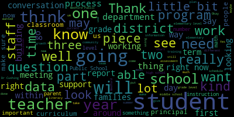

[Galusi]: Good evening, that would be me, Suzanne Galussi, Principal of the Brooks.
[Galusi]: The E in our ACES core objectives stands for equity.
[Galusi]: Within education, the term equity means that every student will get what they need.
[Galusi]: Therefore, Medford Public Schools fosters equitable learning environments by understanding the needs of our diverse population and supporting the academic, social, emotional, and physical needs of our students.
[Galusi]: We have four initiatives to address this objective.
[Galusi]: Please remember that these initiatives are a work in progress.
[Galusi]: So the first is to ensure equitable access through the implementation of the multi-tiered system of support and enrichment MTSSE, formerly known as RTI.
[Galusi]: To encompass a growth mindset, this initiative has expanded our focus beyond just RTI, which stands for response to intervention.
[Galusi]: So in other words, an MTSSE system is not just limited to interventions.
[Galusi]: It also focuses on meeting the social, emotional, and physical needs of our learners.
[Galusi]: The second initiative is to use data from ongoing assessments to support teaching and learning in order to close the achievement gap.
[Galusi]: This will be a comprehensive approach within school buildings and throughout the district.
[Galusi]: Promote and enhance the activities and resources that address the needs of the whole child.
[Galusi]: It should be noted that when addressing the needs of the whole child, we're looking at the complete picture of what that means.
[Galusi]: And that will encompass multiple intelligences, athletics, fine arts, et cetera.
[Galusi]: And to promote the health and wellness of students.
[Galusi]: When students are happy and healthy and their needs are met, they're ready to learn.
[Galusi]: And this segues beautifully into our final core value, the S of support, which Susanna Campbell and Stacey Shulman will discuss.
[Galusi]: So MTSSE is like an umbrella?
[Galusi]: And so RTI fits underneath.
[Galusi]: So we're not dropping RTI, but RTI is more academic based, and it focuses on what students need academically.
[Galusi]: We want to think about the whole child, and we also want to have systems in place to address the social, emotional, or physical needs.
[Galusi]: So in addition to RTI.
[Galusi]: I just want to say that we were looking for parent and caregiver voices for that to bring that perspective to this working team.
[Galusi]: So we value that.
[Galusi]: And for the parents and caregivers that don't get selected through this lottery process, we will be reaching out to you to get your feedback through a different means of communication.
[Galusi]: You all received an email from Dr. Cushing last night with your lottery number in the subject line.
[Galusi]: Once Kim generates, using her platform, the numbers, Dr. Cushing will just read them out loud.
[Galusi]: And then we will email them to you later.
[Galusi]: Cue music.
[Galusi]: Take one minute, it'll be up.
[Galusi]: And here we go.
[Galusi]: This is your drum roll.
[Galusi]: Good evening.
[Galusi]: I'm just going to touch a little bit on the elementary portion.
[Galusi]: This slide just, I know I've spoken to you about the responsive classroom implementation and initiative over these past two years.
[Galusi]: And so these are just the dates that I've presented about responsive classroom to this governing board with the link to those presentations just for your review.
[Galusi]: But what I want to do on this next slide is just remind everyone.
[Galusi]: So at the elementary level and response,
[Galusi]: to this proactive approach is the responsive classroom program, which is woven through everything we do at the elementary level.
[Galusi]: Responsive classroom is a set of practices that build academic and social-emotional competencies.
[Galusi]: It's a belief that children learn best when they feel safe.
[Galusi]: Classroom expectations, routines, those are all discussed with students.
[Galusi]: They are modeled with students, so students know what it looks like and sounds like.
[Galusi]: within their learning environments.
[Galusi]: The language that's used throughout this, and this is the piece that we're focusing on this year.
[Galusi]: Last year when we brought responsive classroom in, at all the buildings, it was that like foundational level.
[Galusi]: So all the training with staff, all the work we did in the buildings was on the first six weeks, setting it up in the classrooms, and it was on morning meeting.
[Galusi]: What does that look like?
[Galusi]: And it was all of those foundational pieces.
[Galusi]: This year, that is still there, and it is still reviewed, but we're adding in the next layer, which is the language.
[Galusi]: Because the language that we use as professionals with one another as colleagues, as well as with students, really can set the tone.
[Galusi]: And so the leadership style that we have and the language we use with those around us in that environment is what we're focusing on this year.
[Galusi]: And I do want to say that like Stacey Shulman has been my partner in this work from the very beginning, our first presentation to you was together.
[Galusi]: And the next piece which is the nexus was also a combination of Stacey and our work last year when we knew returning from the pandemic was going to be difficult for students.
[Galusi]: And so we added this fifth special into our schedule.
[Galusi]: So students, so the responsive classroom piece is the woven embedded part and nexus is this explicit teaching of some of those social emotional skills, as well as the executive functioning skills that can limit the social emotional pieces as well.
[Galusi]: We created this together as the fifth special so that students once a week have this
[Galusi]: Learning in their schedules and part of the curriculum that they're doing in there is our Michigan model zones of regulation pieces where students are working on self regulation and social emotional skills.
[Galusi]: Okay, thank you.
[Galusi]: It's something that we're clearly actively working on.
[Galusi]: We have been all year long.
[Galusi]: I will say that the first job fair that we hosted,
[Galusi]: yielded 22 new quarries.
[Galusi]: So HR has been in the process of onboarding all of those 22 people.
[Galusi]: Some were interested in daily substitute positions.
[Galusi]: Some were interested in more permanent positions like a paraprofessional or SSAs, because they might only be able to commit to like half days or a day here or there through the week.
[Galusi]: But we were pretty pleased with 22.
[Galusi]: And part of the ongoing conversation is,
[Galusi]: doing another one come January.
[Galusi]: This is the time where some college, we get some assistance from college students that come home, but we're just actively working on it.
[Galusi]: It's continuously posted on our website and we're looking to host another job fair.
[Galusi]: But I do know that the 22, some of them have been actively working already.
[Galusi]: Thank you.
[Galusi]: Thank you.
[Galusi]: So when we've presented on this before, you've seen this graphic in some of our other presentations.
[Galusi]: I think the important piece here, Dr. Christian, if you could just, yes, thank you.
[Galusi]: I think the important piece with this graphic, this is part of the Department of Education's graphic to display the multi tiered system of support.
[Galusi]: You can just see here all the layers of how we are, what we're doing to address individual student needs, and that we're looking at all the tiers of what students need.
[Galusi]: So really quickly, what we're going to do in the next slides, the next few slides, is talk about how we are addressing student needs within every tier and how that envelops the science of reading for the early literacy grades.
[Galusi]: So the first slide, tier one.
[Galusi]: So everyone here has spoken about this piece, but here for tier one, that's all students.
[Galusi]: That's everyone in the classroom, all students together, learning during literacy.
[Galusi]: At the elementary level, there are two literacy blocks every day.
[Galusi]: One is for tier two and tier three intervention purposes.
[Galusi]: The other is whole group learning.
[Galusi]: During that whole group learning, that's when we're doing ECRI.
[Galusi]: So every single student is getting ECRI regardless of what their individual support system may be.
[Galusi]: What are we using for tier one?
[Galusi]: In addition to ECRI, we're also using the journeys materials, Lexia, Noozella, some of the supplemental materials we're pulling in as well.
[Galusi]: It happens in the classroom.
[Galusi]: Moving on to tier two, tier two can look different depending on the student.
[Galusi]: Tier two can be a small group that the teacher pulls aside and the students are staying within their room.
[Galusi]: Tier two could be for remediation as well as enrichment.
[Galusi]: Tier two can also be students that may receive EL services as well as remedial reading services.
[Galusi]: And so they just need a little, the next layer of support.
[Galusi]: In terms of what we're doing for tier two to address the science of reading, this is where the Hegarty program has been brought in, because it is well aligned to the science of reading.
[Galusi]: So students that are having a little bit of difficulty and need that, those reading services, they're going to be using the Hegarty program to get that additional foundation of the phonics and the phonemic awareness piece.
[Galusi]: In addition to that, some of the other pieces that we're using for tier two instruction are Alexia Learning, reading A to Z. Houghton Mifflin has many components for tier two, the decoding power, as well as the write-in readers.
[Galusi]: And those are utilized in the classroom, as well as smaller classrooms outside of this.
[Galusi]: This is the second literacy block that I spoke about, which is our wind block, when tier two is occurring, as well as tier three.
[Galusi]: Which I'm going to toss back to Katie.
[Galusi]: So I just want to thank you.
[Galusi]: And I just want to thank this wonderful team.
[Galusi]: We meet frequently to have these thoughtful discussions.
[Galusi]: And if you have any questions, please let us know.
[Galusi]: Can you just, I'm not quite sure which slide you're referring to.
[Galusi]: Sure, I last week I sent out an update to elementary families just because this week starts the report card conference week.
[Galusi]: And so part of the letter spoke about the report card conferences, but I also spoke about map growth because it's newly adopted.
[Galusi]: I did provide some resources links in that communication to families so that they could see ahead of time.
[Galusi]: Some of those links walk the parents through what the screener looks like and can answer some of the questions for them.
[Galusi]: In terms of the bigger picture of how it relates to the mass dyslexia piece, I think that right now, one of the key pieces of communication I wanted to get to parents is that because we've fully adopted MAP,
[Galusi]: The Mississauga was the only school that was using that as their pilot.
[Galusi]: So for three fourths of our families, they're going to get these family reports to be quite honest, they'll see some baseline data, but there will be no growth, because this is the first time they're taking this screener.
[Galusi]: from that growth.
[Galusi]: Missituck families, if their children were in the school for kindergarten and first grade, they may see some growth if they were there because they were part of that pilot last year.
[Galusi]: So we're kind of in flux right now.
[Galusi]: As we get this data, as Dr. Keyes was talking about, as this data becomes
[Galusi]: more at our fingertips where we can kind of start to see the pieces of the areas and where the students are growing versus their learning edges that we have to address, then I think that's when those thoughtful conversations will happen.
[Galusi]: Part of what we're doing in school buildings is that when teachers are concerned and they're seeing that there is a lack of growth or there are areas that they need to work on with students,
[Galusi]: we have in place our student support team and that's where we start because we wanna see those tier one interventions first.
[Galusi]: So teachers will come and they'll work with administrators in the building as well as their colleagues to see what are some supports we can put in place tier one for these students, maybe tier two too within the classroom and track the growth, look at the progress monitoring.
[Galusi]: And then if there are further concerns,
[Galusi]: we just kind of like go up the level, but those conversations, the parents are informed that their child is being brought to a student support team discussion.
[Galusi]: And fall, winter, and spring.
[Galusi]: Yes, most definitely.
[Galusi]: So NWEA, I think we heard about this at a previous meeting.
[Galusi]: The map growth piece goes all the way, as Dr. Chiesa said, to grade 10.
[Galusi]: So students are going to be continuously progress monitored and assessed for these skills.
[Galusi]: The only difference is on NWEA map, there are two tests for the K-2 level.
[Galusi]: The one we're using is the K-2 growth because it has the screener piece that checks that box from DESE that
[Galusi]: that is the screener that meets the dyslexia guidelines rules.
[Galusi]: The other test doesn't have the nitty gritty components that we presented to you on this evening, if that makes it clear.
[Galusi]: But when students move on to third grade, those five elements of reading, they're going to have that continuously monitored through map growth.
[Galusi]: Am I missing anything?
[Galusi]: No, no, that's perfect.
[Galusi]: So good evening, Madam Mayor and members of the School Committee.
[Galusi]: The Director of Professional Learning and Student Assessment, Bernadette Bercudelli, and myself are here to present on the MWCA Math report for the school year.
[Galusi]: The Curriculum Directors, Dr. Nicole Piazza, Director of Communities, Brock Ossiri, Director of Science, and Isaac Kahn, Director of Math, are also here to answer questions at the end of the presentation.
[Galusi]: But I did want to just take this time to thank
[Galusi]: The academic team for the amount of hours they put into this presentation, which has been many.
[Galusi]: And at this time, it's my pleasure to pass it off to Dr. Riccadeli to start.
[Galusi]: I was going to say, I think it's also important to note that this is the average time, right, in the cross-section, across the district.
[Galusi]: So there are students that are taking this class maybe 18 minutes and in more.
[Galusi]: This is the average.
[Galusi]: Test because it's adaptive, it will keep them going until they get to the level where they know that just right level of where the student achievement and growth is at.
[Galusi]: So that if the students keep answering one correctly and then answering one wrong, answering one correctly might take a little bit longer.
[Galusi]: Additionally, it may, I mean, it also may be that this is representative of more than one sitting.
[Galusi]: This is an accumulation of how long it took me to take the test.
[Galusi]: Thank you.
[Galusi]: We're going to get a little bit further in the report when we talk about some of the teacher reports.
[Galusi]: I think we'll address the question that you're asking, but I also need to... Dr. Riccobelli mentioned it, but I think it's very crucial that
[Galusi]: point of data at the teacher and school level.
[Galusi]: The whole point of this is the progress monitoring.
[Galusi]: And so all of those, like, nuanced pieces and the students that took a very long time, there's a story there.
[Galusi]: We don't know what's standing here at the podium, but that's part of what the principals, the school leaders, the curriculum directors uncover so that they can build the students.
[Galusi]: I don't know if you can.
[Galusi]: No, I mean, I think it looks different.
[Galusi]: Ms.
[Galusi]: Sorry, thanks.
[Galusi]: Not at all.
[Galusi]: I was just going to say it looks different in every classroom and at every grade level.
[Galusi]: And so if you want specifics around what that looks like, then that's something that we can look into.
[Galusi]: But I would say that there's a variety of ways that this looks.
[Galusi]: I mean, if I'm just looking at the elementary level and it's literacy block, there's a reason why there's two literacy blocks.
[Galusi]: One is for tier one and one is for the wind block.
[Galusi]: And during that wind block is a great time to catch students up and have students finish an assessment while the others are working on
[Galusi]: individual work or with the teacher.
[Galusi]: There's numerous ways that it's not stopping learning and that everyone is getting what they need.
[Galusi]: I'm going to have to reiterate again the importance of this test is for the progress monitoring piece.
[Galusi]: Teachers need the documentation in terms of making sure that students are getting
[Galusi]: what they need.
[Galusi]: And I'll show a little bit of the reports that help them do that.
[Galusi]: But having data informed discussions to adjust practice is needed.
[Galusi]: I know, I know that.
[Galusi]: So just a reminder for the people like watching or people that are here.
[Galusi]: I mean, for kindergarten, first grade and second grade, it's a mandate.
[Galusi]: So the Department of Education, we have to have a screener as part of the dyslexia guidelines.
[Galusi]: And so that does that for us.
[Galusi]: So we have to, we have to have some right.
[Galusi]: Thank you.
[Galusi]: Okay, so the next section is about the educator reports.
[Galusi]: So this opening slide here just provides you with the percentile colors.
[Galusi]: So these are seen in the reports that the teachers can access, but they're also seen in reports that go home to parents and caregivers.
[Galusi]: So this just gives you the spectrum so that you can see blue reading from exceeding average achievement and growth
[Galusi]: to low achievement.
[Galusi]: The first report that we're going to talk about, I kind of scheduled these reports so that we're talking from large school-based down to student sector reports.
[Galusi]: So this is a school-wide report that the principals and department heads have access to.
[Galusi]: So these show the achievement scores at each grade level.
[Galusi]: So here, you will see a representation of one of our middle
[Galusi]: about this report, it gives just like a bird's-eye view of each of the levels across the grade.
[Galusi]: But they also are highlighted so that if the teacher or the administrator puts on the color bar, it would bring up a snapshot of what you see below, which is the detailed list of student
[Galusi]: levels, their grit scores, and give just a little bit of a broad application to the scoring.
[Galusi]: That does not really go into much detail, but just gives a broad overview.
[Galusi]: The next slide
[Galusi]: is a class breakdown.
[Galusi]: So this shows you, teachers can use this.
[Galusi]: There's two ways.
[Galusi]: They can use this by average grade score, but they can also look at the instructional area.
[Galusi]: I know that a lot of our curriculum directors utilize this, a lot of classroom teachers utilize this.
[Galusi]: So if you see the column on the left,
[Galusi]: you can have all of the standards for learning domains populated and then it breaks your class down into RIT scores so that you can see where students are in terms of, this is the differentiation piece that Dr. Scrum's, yeah.
[Galusi]: Oh.
[Galusi]: Oh, I'm so sorry.
[Galusi]: So that means Zoom can't hear you.
[Galusi]: Okay, okay.
[Galusi]: Thanks.
[Galusi]: I should have remembered for some.
[Galusi]: All I was saying, so member McLaughlin, the column on the left has the domain or the standard which was represented on the test.
[Galusi]: The rest of it shows the breakdown by RIT score so that teachers can see in terms of like differentiating based on that standard where the students fall in their level of understanding.
[Galusi]: So it helps a little bit more as this is again where some of like the standard deviation piece comes in as well as the RIT score comes in so that when you are planning for lessons for where students are and what scaffolds and supports have to be in place this is just a report that will help teachers with their groupings completed.
[Galusi]: Let me know if you have any questions as I go.
[Galusi]: The next report
[Galusi]: The next report can be classroom as well as individual student.
[Galusi]: This is one of my favorite reports.
[Galusi]: This is the quadrant report for achievement and growth.
[Galusi]: So it gives you both in one report.
[Galusi]: So you can see that it's broken up into quadrants of, in the far left where it's orange, that's students.
[Galusi]: So the little specks that you see on there, those represent students.
[Galusi]: If there are two different icons, it can represent more than one test at a time.
[Galusi]: So at the elementary level, if I want to see, if I'm teaching fifth grade and I want to see how my students did in all three tests, I'll check off the box to populate all three.
[Galusi]: There'll be a different icon for each test and I can see where the students fell in relation to their achievement and their growth.
[Galusi]: If you
[Galusi]: hit, everything's hyperlinked, if you hit one of those icons for the test, it also will bring you to a detailed report for each student.
[Galusi]: And below this is also a class breakout of how the students, what their growth was, what their achievement level was, and their percentile.
[Galusi]: So this is a nice way to group students.
[Galusi]: Growth is,
[Galusi]: and then achievement goes horizontally.
[Galusi]: And so teachers can, if they want to, move the access to kind of, but right now it's set on 50% so you can see where the students, where the students are.
[Galusi]: All right, moving on.
[Galusi]: This is another report that gives a classroom view as well as a detailed student view.
[Galusi]: So this is called the class report.
[Galusi]: It breaks the classroom by that color coding scale that you saw.
[Galusi]: so that each teacher can see the overall view of the class, while at the same time also getting individualized student data for each student in the class below.
[Galusi]: That student data, I know it's really small to see, but it has their RIT score, it has their percentile, it shows them how students were in relation to the national norms, it shows students in how they were in relation to the grade level
[Galusi]: their peers within their own class.
[Galusi]: And so the teachers can really use this to get a gauge on how the students are doing.
[Galusi]: This was an upper level example.
[Galusi]: So you can also see the breakdown by domain and by test below where it talks about,
[Galusi]: literature, informational text, vocabulary.
[Galusi]: So it will give each subsection of the test, not the overall view of the English test.
[Galusi]: And then the next one is really narrowed down to students.
[Galusi]: This is student growth summary.
[Galusi]: So these reports, if you don't mind advancing to the next slide, these reports,
[Galusi]: The information is important once students actually have data in there to show growth.
[Galusi]: So we're not going to see this for kindergarten students, we're not going to see this for students that are new to the district, but this projects their growth.
[Galusi]: The orange little diamond is what math projects their growth to be.
[Galusi]: And then the blue column is where they performed in relation to their projected growth.
[Galusi]: This allows teachers to see how students are doing on a trajectory.
[Galusi]: And it also provides information about where they land in terms of relation to their peers and more referenced nationally.
[Galusi]: And then the last report, which is one of my favorite reports from, this is the last one.
[Galusi]: And I have to say that we haven't even touched all the reports.
[Galusi]: It's almost overwhelming for educators, but these are some of the ones that are the most applicable.
[Galusi]: This is the student profile.
[Galusi]: This is a snapshot of the students for every test that they've taken for math.
[Galusi]: This shows you this particular one.
[Galusi]: If you can see the top bar, see how they have mathematics, reading and science.
[Galusi]: But this one I wanted to highlight because you can see how this student performed differently in each grade, in each test.
[Galusi]: So for math, they were yellow, which is kind of like in the average range, but a little slightly approaching the average norm.
[Galusi]: Where at blue for reading, this student is exceeding the norm.
[Galusi]: And for science, the student is better than average, but not exceeding.
[Galusi]: So when you click on those colored tabs at the top, it gives you a breakdown within that box and below based on domain and based on their growth for their achievement and their, their achievement growth, excuse me, their achievement and their growth.
[Galusi]: So you can see really quickly, I just wanna draw your eye to that middle column that says instructional areas.
[Galusi]: Now, because the math was the one that was highlighted, you can see the domains right there for the math test.
[Galusi]: So for number and operations, this student struggled a little bit.
[Galusi]: A 75 is below the average RIT score.
[Galusi]: But you can also see, because it tells you in the yellow up top what the range is for the RIT score.
[Galusi]: And you can see that math has identified number and operations as an area of focus for the student.
[Galusi]: You can also see that below operations and algebraic thinking are a strength to the student above what the scaled RIT score should be.
[Galusi]: So this is information.
[Galusi]: Now, if you clicked on that, it would bring you to the test.
[Galusi]: and to the questions.
[Galusi]: And so teachers can really utilize this data to see that this student, on the mark for measurement and data, on the mark for geometry, above for operations and algebraic thinking, but something's going on with numbers and operations, and let's see what it is so that we can work to build in some supports for where the gaps are.
[Galusi]: And I just want to add that that's part of the reason why we wanted to show you the breadth and variety of reports because teachers are going, I mean, I even said, oh, I love this one.
[Galusi]: It's my favorite one.
[Galusi]: And I think teachers are going to find the report that gives them the data that they need to inform their practice.
[Galusi]: And that's why there's a variety of reports.
[Galusi]: Next slide.
[Galusi]: Yeah, that's right.
[Galusi]: So moving to the next slide, Dr. Cushing, please.
[Galusi]: This, I'm not going to get into the nitty gritty of this next slide because really the data is the same for at the elementary level.
[Galusi]: So the same reports are being utilized that Dr. Riccadeli just spoke about that I highlighted in that section.
[Galusi]: These are comparison snippets to what's used at this level, where principals are having data meetings with their grade level teams during common planning time to talk about the data and make plans for supports.
[Galusi]: Examples around that are teachers helping one another in terms of best practices, differentiation techniques.
[Galusi]: Sometimes it elevates to the need of a student support
[Galusi]: system.
[Galusi]: You can see here, there's the tracking so that at each meeting, the principal is having conversations.
[Galusi]: I know one of the buildings, the principal in collaboration with myself in the upper grades felt that the students, because of a reading issue that affected their math scores.
[Galusi]: So we looked at some of the tier two services and were able to pick up a fourth grade group for reading services, which are typically not done.
[Galusi]: for Title I, but this is how we're kind of utilizing our resources to adapt to what the student needs based on this data.
[Galusi]: Moving to the next slide.
[Galusi]: These next two slides speak about the communication
[Galusi]: And so the reports that go home, you know they go home with each marking period.
[Galusi]: So at the secondary level, that's four times with the report cards.
[Galusi]: And at the elementary level, that's three times with the report cards, which means for this first iteration at the elementary level, they'll get it at the conference.
[Galusi]: Also on this slide, which there's like a pipeline for the family resources for families that are not only translated,
[Galusi]: There's also embedded in this a sample test for the parents that their kids themselves can go on and look and take so that you can get an understanding as to what types of questions your students are getting asked on the test.
[Galusi]: We are going to make sure that this presentation is on our website so that the embedded links are accessible for everybody in the community.
[Galusi]: Moving to the next slide, please.
[Galusi]: This is just a little bit, we've spoken about this.
[Galusi]: This also has some embedded links for resources for families so that they can see what the reports that are sent home to them look like.
[Galusi]: And in the interest of time, and I know I'm advancing slides a little bit, but it kind of dovetails with our next steps because Dr. Riccoboni and I are also going to make sure that
[Galusi]: At the end of this month, we have a presentation for families on that so that anyone that has questions or would like to join to learn a little bit more information can do so.
[Galusi]: We have it reflected on the next slide, but I believe it's... It's Wednesday, November 30 at the 6 p.m.
[Galusi]: So if we could, I do want to say, just to reiterate on this slide before we move on to next steps, that I think the biggest piece is that this is a progress monitoring tool.
[Galusi]: It's not like MCAS, it's not one and done.
[Galusi]: This is for teachers to get an understanding as to what their students' strengths are and what their students' needs are and base their instruction on that.
[Galusi]: This is one element of data, as we've spoken about, and if parents and caregivers have concerns at all, the first place they should go to, and the next place they should go to is the principal.
[Galusi]: Both are well-versed and able to answer those questions, and the principal can then divert them to someone else if need be.
[Galusi]: But I just wanted to reiterate that, if there are people at home wondering where they should go to if they have a concern.
[Galusi]: That leads us to the next steps for Metro Public Schools.
[Galusi]: Just one slide before that, Dr. Cushing, sorry.
[Galusi]: This has really quickly, I mean, we already covered the parent gardening Q&A.
[Galusi]: Can I just quickly say, and I feel like I'm
[Galusi]: on repeat slightly, but I feel like, so two things, slide 15 that I covered, that has the color coding per subject, as well as you can't see it.
[Galusi]: I clicked on the mathematics one so that you can see the range for where the rich should fall.
[Galusi]: Okay, you can see the range for where their scale should fall.
[Galusi]: You can't see that for reading or for science because I didn't click on that.
[Galusi]: I just highlighted one page, but the teacher is able to highlight on, click on each of those tabs and bring up not only the domains that I spoke about, but on the left, the key piece is where the student fell in achievement and where the student fell for growth.
[Galusi]: So I know that the shift in this, as I said before, is that this is really looking at the student and how the student is performing on each test, how the student is growing on each test.
[Galusi]: And so a low growth
[Galusi]: It's always something to be to look at, but if they're already exceeding, and they're already at a high achievement level, they're not going to have the growth that other students do, but in reverse, you could have some students that are scoring and low achievement.
[Galusi]: but they're making huge growth gains.
[Galusi]: And that is something to be celebrated as well.
[Galusi]: The piece of this is that drill down data for each student to see what they need.
[Galusi]: And so a lot of what you're asking and talking about is done at those data meetings at the secondary level with the curriculum directors and school leaders and at the elementary level with the school leaders.
[Galusi]: They're taking the opportunity at those common planning times, which happened twice a month, to talk about the data and then adjust practice to see how can we support the students to do that.
[Galusi]: For each subject.
[Galusi]: It's the last two slides in each subject area.
[Galusi]: Good evening.
[Galusi]: Thank you very much.
[Galusi]: So I'm here to report on seven questions were proposed that I'm just going to read through, if that's okay with the body.
[Galusi]: So all have to do with current reading instruction at the elementary school level.
[Galusi]: So the first question asked if Medford Public Schools have curricula from Fountas and Pinnell utilized by their teachers.
[Galusi]: We do not.
[Galusi]: Previously, part of one of the assessment benchmarks
[Galusi]: under comprehension, we had utilized part of the Fountas and Pinnell, but since my transition into this position, we've phased that out, so we do no longer use that.
[Galusi]: The second question was, does Meffitt Public Schools use any curricula from Lucy Calkins?
[Galusi]: Currently, no, we do not.
[Galusi]: Years back, we did have a writing program, never anything under reading instruction.
[Galusi]: Question three are we purchasing any reading curriculum using the three queuing system method public schools does not nor will not purchase any curriculum using the three queuing.
[Galusi]: rules or system.
[Galusi]: Question four, how many minutes per day do our K-3 elementary teachers spend on phonics instruction with the entire class?
[Galusi]: So as I've presented several times to this body, currently in grades K through two, the phonics is spent for at least 45 minutes, somewhere from 20 to 45 minutes using ECRI, Enhanced Core Reading Instruction.
[Galusi]: Teachers have
[Galusi]: That's for K through three.
[Galusi]: The next question was what percent of our K through three teachers have received training in this phonics instruction.
[Galusi]: So as previously presented to this body.
[Galusi]: For the past three years, we have had direct partnership with Hill for Literacy.
[Galusi]: They have been giving some professional development and training to our teachers since 2018, but for the past three years, they have been in doing sustained embedded training with all of our K-2 staff monthly.
[Galusi]: That includes observations of teachers engaged in enhanced core reading instruction, phonics instruction.
[Galusi]: It includes observations and feedback.
[Galusi]: It also includes training.
[Galusi]: I also have in the report for your information, all of the previous presentations to this body as well as all of the professional development that teachers have had or been exposed to that opportunity for the past four years.
[Galusi]: Question six was, have our teachers been taught that using alternatives such as three key,
[Galusi]: 53 queuing is harmful for students teachers have been provided with, as I just said, with multiple opportunities for the professional development.
[Galusi]: In speaking of that it is ongoing, but it has been a conversation, I can also make sure that it is.
[Galusi]: a more direct conversation.
[Galusi]: Part of what I have done in trying to keep communication aligned and consistent across the district with four different schools is I've done an elementary update, like a memo.
[Galusi]: Last year, I sent out 18 of them.
[Galusi]: So I could share those with you if you'd like, but in those memos, I am specifically talking about curriculum
[Galusi]: I'm specifically talking about instruction, I'm specifically talking about expectations, and I'm aligning our assessments that teachers are using across the district.
[Galusi]: So it has been messaged, but it will continue to be so.
[Galusi]: And then the last question was, what's our plan for ensuring that elementary school teachers current are aware of the science of reading and the use of the three queuing system that's harmful.
[Galusi]: I'm sure some of you, some of this may have come from this wonderful podcast that a lot of us have maybe listened to.
[Galusi]: Part of this messaging, so for the science of reading, that is the pedagogical shift that we've been on for years.
[Galusi]: It's really difficult to sometimes explain what the science of reading is.
[Galusi]: to parents or to the community, even sometimes for teachers.
[Galusi]: But this is what we've been doing and been messaging for the past few years.
[Galusi]: With the enhanced core reading instruction shift that all of K-2 teachers are doing, this year we have a lot going on in terms of literacy instruction, as I've presented before.
[Galusi]: we are going to be looking at a new program that is part of what we're working on this year.
[Galusi]: All elementary reading staff and the two middle school reading interventionists have been engaging in the science of reading course that we have offered in partnership with Hill for Literacy this school year.
[Galusi]: It is a 10-month course.
[Galusi]: We meet every month.
[Galusi]: Actually, tomorrow is this month's meeting.
[Galusi]: That will be, with everything going on this year, we started with the reading teachers.
[Galusi]: In the absence of instructional coaching, I really need the reading staff to be well trained and vetted and knowledgeable about this, so that the plan is next year, the science of reading course, there is a pre-K to two course, and there's also a grades three through five course.
[Galusi]: Both of those courses will be offered for staff next year.
[Galusi]: but this year we really wanted to focus on the elementary staff.
[Galusi]: I hope that that answers your questions.
[Galusi]: I'm here if you have any questions pertaining to either my responses, what was written in the report or any of the several attachments regarding our professional development plan or my presentations here to this body.
[Galusi]: Thank you.
[Galusi]: Member Rousseau.
[Galusi]: It all depends on how it's formatted.
[Galusi]: So I would say in response to that, in light of tonight's wonderful news, that was part of the superintendent and my goal in the Wednesday schedule, because those Wednesday half days will be for district professional development.
[Galusi]: And so how we utilize that is key.
[Galusi]: And so I think that for now, the report, yes, the word opportunity was used carefully.
[Galusi]: and purposefully, but it is, I'm really excited and very hopeful for this new schedule.
[Galusi]: I do think it's an alignment for families that makes sense, but I also think it's, I'm just so happy to be able to offer, well, not offer, well, I'm really happy to be able to have teachers engaged in professional development that's needed and that they have the time to do so.
[Galusi]: So I think it's a if for every know that the enhanced core reading instruction there could be a small written portion but what you're talking about for at the fifth grade level is slightly different.
[Galusi]: I think if we track back the three years.
[Galusi]: That was a skill that was definitely.
[Galusi]: definitely lost a little bit of that skill during the pandemic, especially it's really hard to teach writing virtually.
[Galusi]: And so that is kind of a problem across the board, not just in Medford, but that is a skill that was really kind of impeded during the pandemic.
[Galusi]: So I think part of the process that we're gonna start going through, and I'll have more communication on this, to select a new ELA program
[Galusi]: is going to be looking at the components of all of those programs.
[Galusi]: And part of that will be looking at the writing component, just to see which program would best fit our needs.
[Galusi]: So I think part of the core review process that all the schools are going to do, I'm working on it right now,
[Galusi]: I was kind of hoping to have the Wednesday schedule this year, so I have to do a little tweaking to how we're going to roll this out with staff but.
[Galusi]: In essence, it's an all hands on deck kind of model that we're doing this is the model that Jesse it's the curate model that it's best practice when selecting an la program.
[Galusi]: And so we're going to have teachers looking at every strand, every English language arts strand within each program.
[Galusi]: And that way we'll be able to best see what fits Medford's needs.
[Galusi]: And in that is the writing program.
[Galusi]: Something sold, sold a story.
[Galusi]: Oh, no, no.
[Galusi]: That's all we've been doing.
[Galusi]: So the science of reading is about how we're teaching students to learn to read.
[Galusi]: Right.
[Galusi]: Going back to phonics.
[Galusi]: Oh, yes.
[Galusi]: And direct explicit instruction.
[Galusi]: I think it's probably better if you think of it as an umbrella.
[Galusi]: So Medford Public Schools teachers started to be exposed to this in 2018 through professional development days.
[Galusi]: And that's K-5.
[Galusi]: That's the brain-based instruction.
[Galusi]: That they started in 2018.
[Galusi]: When I came on board in this position for the 2020-2021 school year, that was just coming back from the pandemic.
[Galusi]: So we had ECRI.
[Galusi]: That is when I started to bring in health literacy regularly to be meeting with staff.
[Galusi]: but because we had students learning at completely different models, we were covering it all, but it wasn't until the 2021 school year in which that was the absolute mandate that this is what we're doing.
[Galusi]: No more of your DRA kits or your Fountas and Pinnell kits.
[Galusi]: Have I gone into the school buildings and confiscated them?
[Galusi]: No, but it's been very clear.
[Galusi]: It's been very clear that we're no longer using those programs as district assessments.
[Galusi]: We have now transitioned to utilizing ECRI, we utilize MAP.
[Galusi]: The reading teachers are being trained this year in dibbles.
[Galusi]: So we are on the right path, but member McLaughlin is correct.
[Galusi]: I mean, this brain based,
[Galusi]: way of teaching students how to read has been around for decades.
[Galusi]: Yes, yes, there's actual proof.
[Galusi]: Students have been tested, brainwaves, it's been documented proof, and a lot of this, so just so we know, Hillful Literacy has always been, if you want to vet them out, they're a very reputable program.
[Galusi]: They started as a non-profit through the
[Galusi]: Massachusetts General Hospital program, which is where a lot of this began.
[Galusi]: And it's through the University of Oregon, and now Boston University has gotten in on this.
[Galusi]: So it's all best practice, very well vetted, very aligned.
[Galusi]: Is DIBLS phonics?
[Galusi]: Yes.
[Galusi]: Okay, so now DIBLS is all- But it's an assessment, it's a progress monitoring assessment tool.
[Galusi]: Okay.
[Galusi]: I guess- Similar to a map.
[Galusi]: similar to what we're doing with NWEA map.
[Galusi]: But DIBLS, no, it is not computerized.
[Galusi]: It can be.
[Galusi]: We could talk hours on this.
[Galusi]: I better listen to the podcast first.
[Galusi]: The podcast is wonderful.
[Galusi]: It's six episodes, but it's well worth it.
[Galusi]: I think our K-2 staff,
[Galusi]: In all of the embedded training that they've had with helpful literacy in my conversations with staff.
[Galusi]: They have seen the positive effects of this teaching, and so I think the shift right now is is like our three to five staff just this year i'm bringing grade three teachers in.
[Galusi]: with the Hill for Literacy training once a month, so that they're really getting exposed to what the K-2 teachers have been exposed to.
[Galusi]: So I think, yes, change takes a while.
[Galusi]: And I do think that the podcast, which is really well done, it's going to elicit some feelings for some teachers too.
[Galusi]: And I was in the classroom for 15 years and I taught
[Galusi]: I never taught K to two, but I taught grades three through five.
[Galusi]: And as a third grade teacher, that's where I spent most of my time.
[Galusi]: I mean, I listened to that podcast and kind of.
[Galusi]: Had a little bit of that, that gut feeling, because I think it will elicit some of those feelings for teachers that, um, they, you know, they could have done differently.
[Galusi]: Yes, I'm trying to fit it all in because K to two is still being trained.
[Galusi]: Um, the other thing we're doing this year is part of the training.
[Galusi]: So when, when the teachers are getting the science reading training tomorrow at the end of the day, um, the elementary principals and assistant principals come in and they're being trained, um, because I need school leaders, uh, to be able to be a resource and to be able to understand this.
[Galusi]: So, um,
[Galusi]: I know it's not a great answer.
[Galusi]: I'd love to be able to be doing all of the grades simultaneously, but I'm just trying to build in a prioritized fashion.
[Galusi]: And I do want to just say that Dr. Chiesa and Dr. Riccadeli are at home and on the call listening and have really, you know, partnered with me in this as well as the
[Galusi]: elementary reading department.
[Galusi]: They are just fabulous in what they do.
[Galusi]: They're so energized and excited about this journey that we're all on together.
[Galusi]: And they're just a really talented group of people.
[Galusi]: And so I just want to make sure.
[Galusi]: Thank you.
[Galusi]: Thank you very much.
[Galusi]: Dr. Cushing's going to present the small slide deck.
[Galusi]: So while he's searching for it, I'm just gonna kind of start.
[Galusi]: So good evening, Madam Mayor, members of the school committee.
[Galusi]: Thank you so much, Dr. Cushing.
[Galusi]: Tonight, I'm presenting the requested substitute teachers supply and demand report.
[Galusi]: As background information, the school committee stated the following rationale for requesting this report.
[Galusi]: First, substitute teachers play a critical role in maintaining educational continuity and quality.
[Galusi]: when regular teachers are absent.
[Galusi]: Meanwhile, Medford appears to struggle to obtain enough substitutes to cover the need.
[Galusi]: Second, concerns have been raised for a long while regarding the adequacy of compensation for substitute teachers and the potential effect of compensation on the quality and availability of substitutes.
[Galusi]: And third, understanding patterns and reasons for teacher absenteeism is crucial for addressing any underlying issues and ensuring the effective allocation of resources.
[Galusi]: So as such, the slides presentation for this report will cover the sections listed within the request.
[Galusi]: The first section as listed here covers substitute teacher compensation and district comparisons of substitute pay rates.
[Galusi]: You can advance the slide.
[Galusi]: Thank you, Dr. Cushing.
[Galusi]: So the table presented here displays the details of the current substitute compensation for Metro Public Schools, which you will see has the blue highlight going right through.
[Galusi]: And then you're going to see the comparison of surrounding districts.
[Galusi]: You will notice a variance in daily rates ranging from the high end of $150 per day to Medford Public Schools at $90 per day with Woburn Public Schools, oh, thank you, at 110.
[Galusi]: Dr. Cushing's trying out his pointer.
[Galusi]: You'll also notice that some districts have set a different long-term daily sub rate, and some districts have not.
[Galusi]: At the current time, Medford does have two separate scales for substitutes that are working in long-term coverage needs.
[Galusi]: If they're licensed, it's $125.
[Galusi]: Otherwise, it's about $100.
[Galusi]: Currently Medford, as you'll notice, Malden has a tiered approach, which reflects the substitute's education, experience, and licensure.
[Galusi]: Currently Medford does not have a tiered approach.
[Galusi]: Moving.
[Galusi]: Thank you.
[Galusi]: So the second section covers substitute need and availability.
[Galusi]: and you can go to the, so the chart that is displayed on here correlates the total number of teacher absences to the total number filled by a substitute for school year 23, excuse me, 22-23, which is highlighted in the gray bars, and then currently for school year 23-24.
[Galusi]: It's important to note a few things here.
[Galusi]: First, absences reflect a variety of reasons, ranging from sick days, personal days, jury duty, bereavement, religious observances, professional development or conference needs, and then various forms of a leave of absence, which could be family medical leave act, maternity,
[Galusi]: workman's compensation, et cetera.
[Galusi]: So that is the third column, which for each school year is just a data point to acknowledge that there are leaves of absence.
[Galusi]: And each leave of absence ranges drastically in the amount of days that a teacher may be out.
[Galusi]: So that data point is going to fluctuate drastically.
[Galusi]: You will also notice that the amount of, this data is just for teachers.
[Galusi]: So it does not include any other staff.
[Galusi]: And the number of total teachers is listed underneath the school name.
[Galusi]: There are two asterisks at the bottom of this chart that I think are important to note.
[Galusi]: And one is that there are 17 teachers who have like a district wide status.
[Galusi]: And so they're not reflected in this chart.
[Galusi]: and that the total number of teachers active also fluctuates due to various needs for leave of absence.
[Galusi]: Currently, there are 495 employed teachers, but 489 are currently active as of right now.
[Galusi]: In looking at, you can see that there are trends.
[Galusi]: The total absences by building for last year,
[Galusi]: For the most part, absences have drastically fell for this school year.
[Galusi]: In some schools, maybe not all.
[Galusi]: So hopefully we're seeing that kind of, as we move closer away from the pandemic will start to see these numbers.
[Galusi]: improve a bit, but last year if we averaged out the daily need for a sub, it was 55 subs district-wide.
[Galusi]: That includes all reasons for absences.
[Galusi]: And then this year our average daily need for substitutes is about 32 people.
[Galusi]: I'm sure there'll be questions, but I don't know if you want me to pause or continue going.
[Galusi]: All right, I'm gonna continue going.
[Galusi]: So the third section in this report covers the substitute pool and the current coverage structure for Medford Public Schools.
[Galusi]: So our active pool of substitutes for school year 22-23 consisted of 38 substitutes.
[Galusi]: Three of those were assigned as long-term subs.
[Galusi]: While this year, our current active pool is 46 substitutes, and six of those have been assigned as long-term substitutes.
[Galusi]: So we have been increasing the pool of substitutes from year to year, but it still cannot meet the current demand.
[Galusi]: Most of our substitute pool comprises of college students, current Medford Public Schools, caregivers, and retired professionals.
[Galusi]: The availability of substitutes, because of that compromise of pool, does fluctuate throughout the school year, especially around college students and their availability in the months of January, May, and June.
[Galusi]: It is important to note at the end of each school year, substitutes are classified as inactive until they complete the yearly CORI, which is like the background check, and then they're activated again within our system and able to continue working.
[Galusi]: Dr. Cushing, if you mind going to the next slide.
[Galusi]: This is just a current structure of some internal coverage that we try to employ within the Medford Public Schools.
[Galusi]: So first, there are instructional support staff.
[Galusi]: Honestly, aka, these are the building substitutes.
[Galusi]: And so we have
[Galusi]: through ESSER, but we have one budgeted position at each school.
[Galusi]: However, not each school has been able to fill the need of one dedicated position.
[Galusi]: Currently, the Curtis Tufts, the McGlynn Elementary School, the Brooks, and the Andrews has a dedicated, what we call ISS, or building sub.
[Galusi]: The Roberts, the Missituck, and the McGlynn Middle have not been able to fill this position to date.
[Galusi]: The other position that we have are academic support leads.
[Galusi]: These are new positions to Medford High School.
[Galusi]: So with the shift in leadership, Principal Cabral created two dedicated positions this year to help alleviate daily absent coverages.
[Galusi]: And their title is the academic support lead.
[Galusi]: And then the third layer is a student supervisory assistant or SSA.
[Galusi]: These were created during the pandemic to help alleviate some of the coverage needs around lunch supervision or just daily coverage needs.
[Galusi]: These positions are unique because they work no more than about 18 hours a week.
[Galusi]: Currently, right now, we have an SSA position at the Missituck, the Brooks, and the Roberts.
[Galusi]: It is important to note that some of our SSAs were hired as paraprofessionals in the past couple of years.
[Galusi]: I also think before going on to the fourth section, it's very important to note that the structural nature of the secondary school level lends itself to covering teacher absences in a way that's just not possible at the elementary level.
[Galusi]: For example, at both the middle school and the high school level, there are designated study halls or teachers that can be assigned based on their schedules or open blocks.
[Galusi]: while at the elementary level that's not possible.
[Galusi]: And so principals are unfortunately forced to make difficult decisions to cover the class with in-school resources.
[Galusi]: And those in-school resources can range from the ISS or building sub, but it could also include specialist teachers.
[Galusi]: like Art, Music, PE, Computer, Library, Nexus, and it also can include reading and EL teachers, as well as school leaders themselves.
[Galusi]: And those coverages can range between blocks of time to the entire day worth of coverage.
[Galusi]: Okay, we may go to the next.
[Galusi]: Thank you.
[Galusi]: So the fourth section covers the budget impact of everything I just presented here.
[Galusi]: So on this next table,
[Galusi]: Thank you.
[Galusi]: This next table details the teacher coverage and loss of prep as a result of, especially at the elementary level, but especially due to lack of substitutes and the need for teacher coverages.
[Galusi]: So you will see that last year, in total, we spent $448,960 just in teacher coverages and loss of prep.
[Galusi]: The anomaly, as noted in the comments section for March of 2023, includes a few things.
[Galusi]: One,
[Galusi]: It includes, so when the contract was ratified, there was the retro pay of per hour rate for teachers increased.
[Galusi]: And so that resulted in about $34,730 that were paid to teachers on March 2nd per the contract to account for that retro need.
[Galusi]: Last year, there were also a great deal of coverage needs at Medford High School and the Andrews Middle School, which resulted in the total cost there.
[Galusi]: You can see currently for this school year, all of the data from all the graphs compiled for this report go up into March 31st.
[Galusi]: So we do not have clearly, but data for April, May or June.
[Galusi]: So to date, our current total of teacher coverage and loss of prep is $34,408.89.
[Galusi]: Next slide.
[Galusi]: breaks down the total impact.
[Galusi]: So you can see the graph, excuse me, the column in the middle has our anticipated budget, which was what we allocated in the operating budget to cover substitute needs as well as teacher loss of prep and teacher coverage.
[Galusi]: versus what we're actually spending.
[Galusi]: I think it's important to note here, as you noticed for last year's spend, which was fiscal year 2023, we ended that year with a total of $878,327.
[Galusi]: That number includes
[Galusi]: the $448,000 and change from the previous slide because this spending includes all three.
[Galusi]: It includes what we pay for substitutes, what we pay for teacher coverage, and what we pay for loss of prep.
[Galusi]: So if we were to subtract the $878,324,000,
[Galusi]: by the 448 and change, you'd get the total cost we spent on substitutes.
[Galusi]: And then the final section.
[Galusi]: is our recommendations and next steps to address the findings of this report and how to effectively address substitute supply and demand.
[Galusi]: And so, final slide, Dr. Cushing.
[Galusi]: Some of the things that we've been talking about internally are adjustments to the current substitute teacher compensation structure.
[Galusi]: We're discussing it and we're vetting out the implementation for fiscal year 25.
[Galusi]: This includes, but is not limited to.
[Galusi]: increasing the pay scale for substitute teachers and for the instructional support staff position, considering the establishment of a tiered pay scale system similar to what we saw for Malden, which includes consideration of a substitute's experience, licensure, and level of education,
[Galusi]: as well as looking into the feasibility of using an educational staffing company to build a greater pool of substitutes and also to help arrange and organize daily coverage needs, which is being used in some districts.
[Galusi]: So that vetting process of the educational staffing company has been ongoing all year, but these are some of the ways that we're looking to remediate and mitigate the current situation.
[Galusi]: And at this time, if you have any questions, please let me know.
[Galusi]: Yes, and I can get that to you.
[Galusi]: I don't have it at my disposal right now, but I know most of the principals.
[Galusi]: I think the tricky part would maybe be data from last year, where there was a turnover at one building.
[Galusi]: But I know principals have been keeping that data, so I can get that for you, definitely.
[Galusi]: Correct.
[Galusi]: So teacher coverage is that
[Galusi]: No, it's okay.
[Galusi]: Teacher coverage, you mostly see at the secondary level, but it's when teachers, you know, outside of contractual obligations are covering or they're picking up a coverage due to an absence or a long-term absence.
[Galusi]: And so we have to pay for that coverage.
[Galusi]: Does that make sense?
[Galusi]: They're taking on the teaching duties or the coverage of the class for the absent teacher.
[Galusi]: So in the previous contract, it was $30 an hour.
[Galusi]: And in the new contract, it's now $40 an hour.
[Galusi]: So if you're speaking about what was owed to them retroactively, we had to go back to when the dates reflected in the contract and add $10 to all of the teachers who either provided coverage or lost their prep.
[Galusi]: for the year.
[Galusi]: Yes.
[Galusi]: I think probably, honestly, I want to have that conversation with the superintendent and Jerry McHugh.
[Galusi]: but I know I've been having ongoing, we have been engaging in ongoing conversations all year with Mr. McHugh around this and both Mr. McHugh and I have had meetings with the company to see what we could do, but I can get that definite answer from you once I speak to Mr. McHugh.
[Galusi]: Mr. McHugh has already spoken about, and one of the slides clearly showed that we're under, the budget for this need, it does not reflect, they're not balanced.
[Galusi]: So the only thing I wanna check with him is if it's part of the April 23rd meeting, or if it's part of the May 8th meeting.
[Galusi]: That's what I'll clarify with him.
[Galusi]: we're, I mean, I don't want to quote an amount, but we're definitely recommending an increase in the rate.
[Galusi]: No, we have started that conversation.
[Galusi]: And to date, there is not a timeline.
[Galusi]: The only thing that they're clear about is that they can't build a pool overnight.
[Galusi]: And so they spoke a lot about the recruitment strategies that they would utilize to increase our existing substitute pool.
[Galusi]: And so they're just careful to say whenever they, let's say potentially we were to utilize them, whenever we engage in that partnership, it will take,
[Galusi]: you know, to their end, couple weeks, couple months to build an adequate sub pool for the district.
[Galusi]: Um, no, some of that is part of the conversation, but I mean, they will use our existing rates that we have set.
[Galusi]: I mean, they were clear that they'd like to see an increase in those rates, but they will use the current rates that are already set.
[Galusi]: And then they take on for a temporary time, kind of full ownership of the staff, which means they'll do like the training and the onboarding, they'll do the organizing of staff.
[Galusi]: They'll deal with that for the first couple months of employment.
[Galusi]: And so there is, they take a percentage of
[Galusi]: the fee, the pay.
[Galusi]: Yes.
[Galusi]: So I will be honest.
[Galusi]: I mean, I did not go and do a deep dive into pre-pandemic numbers.
[Galusi]: So I could do that.
[Galusi]: I mean, I do think that the absences and the need for absences has definitely been decreasing as we're kind of going
[Galusi]: month by month, year by year out of the COVID pandemic.
[Galusi]: So I think, but also the need for leaves of absence fluctuates so much, which you can also see in that chart.
[Galusi]: And that's a definite factor in terms of some of them might've been entire years of a leave of absence, right?
[Galusi]: So, and some of them may have been short-term.
[Galusi]: I can get some more data for you if you would like a comparison to pre-pandemic.
[Galusi]: I think there may be.
[Galusi]: Yeah, I think there may be a lot of reasons at play.
[Galusi]: I would be curious to kind of watch the trajectory from year to year.
[Galusi]: But.
[Galusi]: Yes, for during the day.
[Galusi]: I would have to get back to you.
[Galusi]: I think some attend staff meetings and training sessions, while not all do.
[Galusi]: All right.
[Galusi]: But common planning time during the day with teams, yes.
[Galusi]: Good to know.
[Galusi]: And I think that's, especially at the elementary level,
[Galusi]: At the elementary level, it's at the expense of.
[Galusi]: So I think we do have to look at the amount of money that we are spending on coverages and loss of PrEP.
[Galusi]: It may be difficult at the beginning, but we're talking salaries or increases in that substitute pay, because especially at the elementary level, they get one PrEP a day and it's not guaranteed because
[Galusi]: if the art teacher is out, if the music teacher is out, they lose their one and only planning period for the day, as well as, as I mentioned, support staff being pulled.
[Galusi]: And then that means we're affecting students and their services, and that's not equitable, and that's not okay.
[Galusi]: So we do have to do something to increase that.
[Galusi]: because right now we also don't have an active sub-pool that meets the daily demand.
[Galusi]: Absolutely.
[Galusi]: Sure.
[Galusi]: Right now, we currently don't have a position that I would say, don't quote me on this title, but I would just say like attendance coordinator.
[Galusi]: Let's just say we don't have someone right now that works on recruitment and that actually organizes daily coverage needs.
[Galusi]: So the way it works right now is we have an online portal called Frontline, and teachers, when they need to be absent,
[Galusi]: they go in digitally and they record their absence in that system.
[Galusi]: Our current pool of substitutes are also connected within this system and they can go in, they log in, they can see all of the coverages that are needed within the district and they select the ones that they want to take as work for the following day or that morning.
[Galusi]: But there isn't someone that's maybe actively making phone calls.
[Galusi]: and trying to connect substitutes to the coverages that are needed.
[Galusi]: We're just relying on the online portal.
[Galusi]: Thank you.
[Galusi]: I think we'll come back to you with what finance and the superintendent is recommending.
[Galusi]: Thank you.
[Galusi]: We're each other like an hour.
[Galusi]: Here.
[Galusi]: Here.
[Galusi]: Here.
[Galusi]: Hi, I'm Susanne Kalusi.
[Galusi]: This is my 27th year.
[Galusi]: So I, too, was born and raised in Medford, one of my favorite schools.
[Galusi]: I no longer live here, but my whole career has been here.
[Galusi]: I started as a teacher and assistant principal, school leader at Brooks, and assistant superintendent for elementary schools, and now assistant superintendent for academics and construction.
[Galusi]: Similar to kind of Marta's piece, I'm really excited to get to work with all of you for the instructional vision of the schools.
[Galusi]: I think as someone that was Maria kind of spoke a little bit about it.
[Galusi]: So, you know, my father was the project manager for the K to eight buildings.
[Galusi]: So I feel like I have kind of lived both sides of this a little bit, but being blessed enough
[Galusi]: to be one of the teachers in the new, at the time, 2001, the new school, it was great to also see that whole process unfold as an educator and be one of the people in the new schools.
[Galusi]: So I think the critical role that we all play, these decisions that are going to impact our educators, our students, our families, our community, is very important to me, so I do take
[Galusi]: take this very seriously.
[Galusi]: And I feel very honored to be part of the team and get to work with all of you.
[Galusi]: Okay.
[Galusi]: Yeah.
[Galusi]: My apologies, we have one literacy coach who's housed at both of the Title I buildings, the Missittuck and the McGlynn.
[Galusi]: And just for clarification, so it's part of the Title I budget.
[Galusi]: Okay.
[Galusi]: Her salary is paid out of the Title I budget.
[Galusi]: Hi, good afternoon.
[Galusi]: Suzanne Galussi, Assistant Superintendent for Curriculum and Instruction.
[Galusi]: I'm here just to be a participant in the decision-making process and very curious about the rollout of the Curtis-Tufts and possible participation with Medford High School.
[Galusi]: I would agree.
[Galusi]: Would you, would it be okay if everybody just kind of went around and introduced themselves and what their role is within the district?
[Galusi]: That would be great.
[Galusi]: So, I mean, you already introduced me, but Suzanne Galussi, Assistant Superintendent for Curriculum and Instruction.
[Galusi]: Thank you so much.
[Galusi]: And we definitely also have Michelle Kroll on the call.
[Galusi]: She's the Principal of the Roberts, but I know she's just finishing up something in the building, but I wanted to make sure that she was recognized.
[Galusi]: And I know somewhere Dr. Cushing was on this call as well, but I think he's just in listening mode right now.
[Galusi]: So, I mean, I think the best, just maybe the best way to handle some of this, we have some wonderful expertise on the call.
[Galusi]: And so, oh, and I see Paul Texera is coming in to the call right now, the director of English Learner Department.
[Galusi]: Um, but with all the expertise on the Paul, Paul, Paul, I'm so sorry to put you on the spot the minute you come in the room, but you mind introducing yourselves before we get going.
[Galusi]: Thank you.
[Galusi]: Member Reinfeld, I would agree to start with, I had made a copy, if you would like, I can share my screen.
[Galusi]: I had made a copy of the A1 curriculum document that's linked to the strategic plan.
[Galusi]: And I just added a column so that we have like a starting point to provide an update for the work that's been done throughout the life of the strategic plan.
[Galusi]: Does that sound okay?
[Galusi]: All right, can everyone see my screen?
[Galusi]: So I've lost sight of all of you, so I just need a verbal.
[Galusi]: Thank you.
[Galusi]: Thank you.
[Galusi]: Okay, so this is the A1 curriculum tab from the strategic plan.
[Galusi]: And this outlined the work that the district did between the years of 2021 and 2024, so currently.
[Galusi]: So for each action item, we just provided an update.
[Galusi]: So the first one said, deliver professional development activities related to the revisions of the Massachusetts curriculum frameworks.
[Galusi]: So internally, we have a spreadsheet that Dr. Riccadeli started and that we've been updating, which speaks to the current curriculum per each department.
[Galusi]: And it kind of lets us know where we are within the curriculum cycle per department, per grade level.
[Galusi]: I'm not quite sure if you'd like me to just also open that up and just briefly, I don't know if we need to necessarily hit every tab.
[Galusi]: Just to get a sense.
[Galusi]: So like this is the English language arts one.
[Galusi]: So you can see it goes from K to 12 and it just,
[Galusi]: lists the program that's being used, when the implementation year was, the criteria and the components of the program, and a little baseline as to when it would be up for the next review cycle.
[Galusi]: And we have that for all of our departments, just to get an understanding of how we're tracking things internally.
[Galusi]: So the second action item was use a protocol for assessing instructional materials for bias.
[Galusi]: So this is part of the core review process we go through when we're looking at reviewing curriculum updates, as well as brand new programs.
[Galusi]: And part of that cycle per the Department of Education
[Galusi]: includes a review of ed reports and the curate system so that part of that review is done when we are updating the curriculum within each department.
[Galusi]: Please just like interrupt with any questions or if there's administrators on the call that want to add to anything I'm saying, just chime in please.
[Galusi]: The next action item is to create a master list of adoption cycle curriculum offerings, which we have done, as I showed in the updated curriculum catalog.
[Galusi]: And then one of the things that we've been working on is a draft process to finalize
[Galusi]: that curriculum review process from Medford Public Schools, which I think we can maybe highlight once I get through the action items just so that we can provide first a base review of the work we've done.
[Galusi]: Okay.
[Galusi]: So the next one just says update curriculum.
[Galusi]: So this is something
[Galusi]: as in that spreadsheet that's ongoing.
[Galusi]: So, you know, sometimes it's that we've been with a curriculum for a long time and we're seeing that we need something new because it's not maybe hitting student needs.
[Galusi]: Sometimes it's the Massachusetts Department of Education has updated the frameworks and the standards that teachers use when they're teaching.
[Galusi]: And so there are many reasons why we initiate curriculum reviews.
[Galusi]: When the strategic plan was written in 2020,
[Galusi]: for a launch in 2021.
[Galusi]: This column here highlighted some of the work that was, had begun and or ongoing, or maybe nearly completed.
[Galusi]: And so over here, the updates per department are all listed here.
[Galusi]: So for the humanities, text lists were provided, texts, like lists of the texts that grade six through eight and 11 were using the elementary,
[Galusi]: started the core review process for a new curriculum last year.
[Galusi]: And last year was like the review process.
[Galusi]: This year was the full implementation of the Houghton Mifflin program.
[Galusi]: PD has been sustained and embedded all year long, both through Houghton Mifflin Harcourt, who's the publisher of the program, as well as through a partnership we have with HILFA Literacy, which is a literacy consulting firm of expert
[Galusi]: reading specialists in the field.
[Galusi]: Physical education and health is quite long because they've been doing a lot of work.
[Galusi]: So their health curriculum updated per the Department of Education in 2023.
[Galusi]: And so I know that director Rachel Perry, along with assistant superintendent, Dr. Cushing, they both sat on the HECAC committee.
[Galusi]: I believe member Reinfeld, member Rousseau also sat on that committee.
[Galusi]: I'm apologizing if anyone else on this meeting also sat on that committee and I failed to acknowledge you, I apologize.
[Galusi]: But I know they've done a lot of work.
[Galusi]: So this is the,
[Galusi]: In a snapshot, I know the biggest implementations, that work is ongoing.
[Galusi]: So this year, the fifth grade puberty has shifted the curriculum that we're using and the approach and the format that we're using.
[Galusi]: Those lessons have started this year.
[Galusi]: And so some of the work is still continuous as they're looking to update
[Galusi]: per the frameworks, but I know that they began with the health curriculum, and then she's looking to move next to the physical education curriculum.
[Galusi]: So implemented this year, as I have said, was the fifth grade puberty lessons, along with making sure that that work aligned.
[Galusi]: We've updated Nexus at the elementary level, so that Nexus is handling the health curriculum, which is Michigan model.
[Galusi]: Ms.
[Galusi]: Perry has been working directly with the Nexus teachers in that department.
[Galusi]: And I know that the work to finish the new sex ed curriculum will be finished next year.
[Galusi]: She has listed here recommendations, and again, the work with the PE department that will begin next year, as you see here, to develop a physical education committee.
[Galusi]: World Language also had frameworks somewhat recently updated, and so Dr. Vilma Bobo has started working with her staff to review the updated standards.
[Galusi]: She's provided numerous opportunities for professional development and professional affiliations within her department, and
[Galusi]: lesson plans and curricula will be aligned next year based on the work that she's been doing within her department to update to the frameworks.
[Galusi]: Math, as we all know, and Faiza can speak to this much more closely than I can, but she has been in a constant state of alignment and adjustment within the math department, both at the middle school and the high school level to align to the integrated math pathways.
[Galusi]: And elementary last year went through their full implementation year.
[Galusi]: of the investigations three curriculum.
[Galusi]: So this is year two for that curriculum.
[Galusi]: Science FOSS was implemented, I believe, in 2018.
[Galusi]: So next year we'll be looking to kind of review FOSS.
[Galusi]: and see where we go from there.
[Galusi]: And then the rest is pretty much, some of it is reiterating the things that I have just said in terms of the departments.
[Galusi]: Additional information for science would be that at middle school, the STEM scopes curriculum was implemented in school year 2021.
[Galusi]: High school ranges, which is reflective in the spreadsheet, but it ranges depending on the course.
[Galusi]: So some of the curriculum began in 2019, where others were just updated last school year or this school year.
[Galusi]: We spoke about health and world language.
[Galusi]: And the only other piece right now would be technology.
[Galusi]: Molly Layden, Director Molly Layden has worked to update the technology curriculum that is offered through the schools.
[Galusi]: One of the things that she will begin, the work that will begin next year is updating the library curriculum to align with the library media.
[Galusi]: And then the last piece of an update, the last action item here speaks of review of new research-based comprehensive elementary literacy programs, rubrics to select elementary literacy programs and then implement literacy, elementary literacy programs.
[Galusi]: So that was a mouthful, but basically this has kind of two levels to it.
[Galusi]: One was the work we did to become compliant with the,
[Galusi]: Massachusetts literacy screener regulations under the dyslexia regulation.
[Galusi]: And so that was the we've had like a tiered approach to that and that was this bottom piece here, which is
[Galusi]: the pilot of the DIBELS program, which fully meets, it's like full compliance per the Department of Education for meeting the literacy screener regulation.
[Galusi]: That pilot was done last year, and it was fully implemented this year, elementary K-5, so all K-5 students received the benchmark DIBELS.
[Galusi]: and grades six through eight intervention students received DIBELS, either in a benchmark or progress monitoring situation.
[Galusi]: When it comes to, oh, also we implemented ECRI, which is Enhanced Core Reading Instruction.
[Galusi]: This was to also comply to make sure that our reading instruction is structured and explicit.
[Galusi]: And so all of our K-2 staff use ECRI when they're teaching reading to their students.
[Galusi]: In terms of the core review process, the Department of Education, as I stated, is very
[Galusi]: Particular about the process that's used when we when districts are selecting new curriculum.
[Galusi]: And so this core review process as aligned by ed reports and the curate system.
[Galusi]: We used helpful literacy to help us engage in that work.
[Galusi]: For the ELA reading program.
[Galusi]: This folder that's linked here also kind of explains
[Galusi]: the core review process, which was quite extensive.
[Galusi]: It included teachers, administrators, and caregivers to narrow down ELA programs and to finally select the one into reading that was implemented this year.
[Galusi]: Any questions before I maybe stop the screen share?
[Galusi]: I do apologize, I've lost the ability to see people.
[Galusi]: So I'm not quite sure if there are hands in the air.
[Galusi]: Am I okay?
[Galusi]: So I think, I mean, with all due respect, I think that that's maybe a conversation for a different meeting.
[Galusi]: I think today, right now, we're kind of charged with talking about how we're going to create a process to show that our curriculum is effectively working for students.
[Galusi]: And I think that having all of these lovely experts here, I would really love to be able to have that conversation and tap into the school and department leaders that are on the call today.
[Galusi]: But I welcome that conversation at another point.
[Galusi]: Thank you for that.
[Galusi]: I appreciate that.
[Galusi]: I think that is one of the main reasons why the district moved to bring in NWEA map growth.
[Galusi]: Because
[Galusi]: I think we all know, so we have multiple measures of assessment and some are ongoing and some are kind of like a snapshot and MCAS is an end of year
[Galusi]: benchmark through the Department of Education, but it is, it's a one time test.
[Galusi]: It's not a system.
[Galusi]: And so, NWEA, NWEA map growth.
[Galusi]: checked some of those boxes for us in that it is aligned to Common Core standards.
[Galusi]: It did include science, and a lot of these district-wide assessment measures only started with, like I-Ready, for example, were just math and reading, or ELA.
[Galusi]: And so one of the things that intrigued us about MAP was that it also included the science components so that we had these set benchmarks to see how our students are faring on common core standards outside of the curricula itself.
[Galusi]: And so I think that is definitely a component that we rely on.
[Galusi]: But I think engaging in the conversation around the validity and the timeline is important because some programs are probably in the just right spot, while it's difficult to look at some of those scores and call it a reliable measure in like the first year of implementation.
[Galusi]: So I know that Miss Khan, I don't know if not to put her on the spot, but I know she has seen some tremendous progress per MAP scores at the end of the year here in math, which is we're in like year two of the curriculum implementation.
[Galusi]: But we're not going to see that growth yet, you know, for reading because this is at least at the elementary level, this is like year one of the program.
[Galusi]: So I think
[Galusi]: And then there is the piece of, to your point, like the observational and the instruction and the fidelity to the program.
[Galusi]: But I think it's important to continue this conversation so that it is in a more formalized manner.
[Galusi]: But I would offer other people to kind of
[Galusi]: chime in if they feel.
[Galusi]: Yes.
[Galusi]: Oh, you're up.
[Galusi]: I think we agree.
[Galusi]: And I know that when we've engaged in the curriculum review cycle for, let's just say, a new program, new curriculum, following that core review process has always included
[Galusi]: varied stakeholders so it has always included administration as well as teachers and caregivers and but we don't we haven't really had anything necessarily like formalized.
[Galusi]: I know that just taking that process, we have a slight draft of what that process looks like, but I think what you're speaking about is that final part of the process where you're in the implementation phase, but then that implementation phase also leads into the monitoring phase.
[Galusi]: What does that look like as we're monitoring the curriculum to see how it's meeting the needs of our students?
[Galusi]: And when that varied use of stakeholders kind of enters that monitoring phase, I do think is worthy of discussion.
[Galusi]: And I think it's going to look different.
[Galusi]: at each level and at each department.
[Galusi]: And I think we, you know, you use data to kind of guide those discussions.
[Galusi]: So right now we're seeing some positive, like just for example, not to always kind of like say something to FISA, but like we're seeing some like positive data around the math.
[Galusi]: But in terms of, you know,
[Galusi]: I mean, so that math piece is in the monitoring phase that will stay in the monitoring phase for a couple more years.
[Galusi]: But if we see a dip in that student data, then it's going to warrant a closer eye.
[Galusi]: And I think the other piece, like to my point, is that some of that other data around like triangulation, especially maybe just for FISA's piece, but for all the departments,
[Galusi]: is I would also welcome a conversation around like trajectory data, because I think that like part of the push for math was because FISA was seeing some data about the preparedness of students in advanced opportunities in like grades, you know, I guess nine, 10 and on, as well as what the enrollment looks like in some of our advanced placement classes, honors and AP.
[Galusi]: FISA and curriculum directors are also monitoring the scores that our students are receiving on AP exams.
[Galusi]: And so I think even just having a conversation around the kind of data that's important to make some of these decisions beyond map data also would be a worthwhile discussion.
[Galusi]: So I think that also varies from department to department, like world language, Dr. Bobo, there's like the seal of biliteracy.
[Galusi]: I mean, there are AP courses as well, but there's also the seal of biliteracy.
[Galusi]: And then there's also just, there's enrollment.
[Galusi]: And so at least at the high school level where students have a choice, starting in grade 10 with really like what their,
[Galusi]: taking as both like electives and just enrollment in course selection is also useful data for us to kind of track, you know, the interest in students as well as the persistence.
[Galusi]: but I do defer to my experts on the call.
[Galusi]: I think Rocco and Fiza could speak to that.
[Galusi]: They work very closely on that.
[Galusi]: Yeah, I don't think there's like a definite answer for that right now.
[Galusi]: I definitely welcome the continued conversation in a future meeting but I know, I don't know if you want to end I can kind of show like the draft for what that process looks like.
[Galusi]: And I think
[Galusi]: following that process as well as taking a deeper dive on the catalog of curricula that we have internally and in mind with your kind of like didactic structure, right?
[Galusi]: Because that's the key.
[Galusi]: We've already well established that we have MAP growth and how it's used.
[Galusi]: and the importance of the instruction and fidelity to the program, but then there is the importance of that, you know, that third kind of piece of data, too, around the grade level performance, some of those internal factors that we're looking at, and observations that we conduct.
[Galusi]: And I think the, like the observational rounds, which have been
[Galusi]: very effective in pockets.
[Galusi]: Mr. Teixeira, Mr. Tucci, and Ms.
[Galusi]: Khan, as well as others, but like, they've really took like a deep dive on that.
[Galusi]: And I think, you know, that's work that we can also build.
[Galusi]: As well as I think, you know, aligning to the Ed Reports and the curate process is,
[Galusi]: the Department of Education pushes high quality grade level curriculum right across the board.
[Galusi]: And that's very easy to kind of, I shouldn't say it's easy, but assessing grade level material when it's from a published program is one thing, but reviewing and assessing curriculum that is
[Galusi]: created in-house is a different process.
[Galusi]: And I think that's the process or some of the work that we could, that the district needs to like maybe look at too.
[Galusi]: Because it's very clear the process from the Department of Education when you're assessing high quality materials that have already been created by a publisher, which we have many, but assessing
[Galusi]: the high quality, I don't wanna say high quality ness, but the high quality grade level piece of internally created curricula is a different structure.
[Galusi]: And I think that that's one that we could also discuss.
[Galusi]: what that looks like will be different than what the other process looks like.
[Galusi]: Yeah, I wanted to also just note that it's not going to look the same depending on the department or the grade level.
[Galusi]: Because there are some guiding questions, but to Mr. Cieri's point, I loved his question about the difference between what a curriculum offers and what a curriculum expects.
[Galusi]: I think since this is a draft, I would love to add that into our guiding questions somewhere.
[Galusi]: But this basically just kind of takes into account the four phases when we're looking at assessing curriculum.
[Galusi]: which is what happens in the planning and the review.
[Galusi]: I don't have to read all of it, but this first box kind of gives the snapshot of what happens during this process, which is establishing the team of stakeholders that you spoke about, Member Reinfeld, and doing some of that preliminary work to know
[Galusi]: what is the research saying about the current content so that the people on this team and all stakeholders kind of understand.
[Galusi]: So to like Dr. Keyes' point earlier, if we were doing this on like early literacy screeners, we would really want to inform this group of stakeholders what is current research saying about the science of reading.
[Galusi]: Then the second phase is like the analysis, where we're looking at our internal data around
[Galusi]: all those triangulation pieces.
[Galusi]: There are some links in here of things that we would be pulling in right away from student assessments to DESE guidance, and of course, alignment to our strategic plan.
[Galusi]: And then the next phase is like making a determination about is the curriculum meeting the needs of students?
[Galusi]: Do we need to move on?
[Galusi]: Do we need to enhance?
[Galusi]: Is it time to look for a new program?
[Galusi]: And the team would be making those decisions to chart a path forward.
[Galusi]: And then this is the very long part here, because it's not only the implementation, but it's the monitoring.
[Galusi]: And this is where we can live for like
[Galusi]: three to four years as we're kind of implementing a program and continuously kind of like progress monitoring it.
[Galusi]: And I think this is where a lot of the work, per how you've kind of phrased this, you would like to live in kind of like this section of the work.
[Galusi]: Right.
[Galusi]: Yes, yes, beyond our control.
[Galusi]: Are you talking about for this draft?
[Galusi]: Well, I think this is like the crosswalk of this.
[Galusi]: To this, like I almost view this a little bit.
[Galusi]: Right.
[Galusi]: So it's going to look different at each level.
[Galusi]: Right.
[Galusi]: Within each department.
[Galusi]: So.
[Galusi]: I think that's part of the work that we're all doing internally, but I think that I would like to work on firming this up with the administration, the school and department leaders, as well as kind of narrowing in a little bit more on this so that we can see what the, eventually I think we need to also have like,
[Galusi]: something posted, right, so that it's very clear on our website, year by year, where we are.
[Galusi]: So like 2024, if it was up on our website, we could see that this is, you know, year two at the elementary level, it's year two for math.
[Galusi]: It's year four for FOSS, I think, Rocco, four or five, four.
[Galusi]: Okay.
[Galusi]: And it's year one for inter-reading, right?
[Galusi]: And I think we need to be able to build that so that there is a clear understanding of where we are.
[Galusi]: I mean, there is, you know, you can't go on the Department of Education, but they only list
[Galusi]: reading math and science.
[Galusi]: It's not.
[Galusi]: We have to update it.
[Galusi]: But I think there should be something on our website as well.
[Galusi]: I know people argue about that.
[Galusi]: Best practice is a five to six year cycle.
[Galusi]: So to that point, we should be looking at FOS
[Galusi]: That should be one of the next focus areas for elementary.
[Galusi]: But I want to be able to like create that cycle so that we can see on a yearly basis where we are.
[Galusi]: And I think that would be very helpful.
[Galusi]: Absolutely.
[Galusi]: Yes.
[Galusi]: Thank you, everybody, for joining.
[Galusi]: Good evening.
[Galusi]: I'm just here to update you.
[Galusi]: Dr. Chiesa had applied a couple months ago for the Vacation Acceleration Academy Grant through Governor Healey's office and the Department of Education.
[Galusi]: And on May 2nd, Medford Public Schools was awarded with that grant.
[Galusi]: The sum will be $42,000.
[Galusi]: And so I'm just here to let you know and update you on how we are going to fulfill that grant.
[Galusi]: So the grant is used for acceleration during vacation periods that can be summer, or that could be one of the vacation weeks we are electing for this summer.
[Galusi]: to ensure that we are minimizing some of that literacy growth that we've seen in our students.
[Galusi]: And we are really focusing on the elementary levels, as well as the transitional grades of six and nine.
[Galusi]: With that $42,000, we will hire licensed educators, Medford Public School educators.
[Galusi]: And we have several that have already
[Galusi]: given interest.
[Galusi]: Of that list will just include elementary classroom teachers, licensed reading teachers, at the secondary level English teachers, and then part of this program, I will get into the structure of it in a little bit, but part of the grant highly suggests that we have some specialist activities for students.
[Galusi]: So there will also be art-based activities and that will include the
[Galusi]: inclusion of physical education teacher and an elementary nexus teacher, and also coverage by school nurse.
[Galusi]: Additionally, paraprofessional or behaviorist support may be included in the staffing needs.
[Galusi]: So this is going to be a one-week program.
[Galusi]: and it will be housed at the McGlynn School Complex.
[Galusi]: And last week on Friday, caregivers received the invitations from me to register their students if they are interested.
[Galusi]: It will run the week of July 29th to August 1st, and it's a full day program.
[Galusi]: So instruction will run from nine to two with drop off at 8.45.
[Galusi]: Pick up a 215 a lunch in a recess period and a specialist period will be included and students will receive if they would like free breakfast and free lunch will be offered to the students.
[Galusi]: Next slide, just to speak about the format.
[Galusi]: At the elementary level, there are two lanes for this grant opportunity.
[Galusi]: One is the early literacy program, and the other is the ELA program.
[Galusi]: So per the grant requirements, the early literacy program is targeting rising students in grade one to three, that's currently students in grades K through two.
[Galusi]: The invitations that,
[Galusi]: some families received for their children to participate in this program.
[Galusi]: The primary focus of data was DIBLS.
[Galusi]: We looked at the DIBLS scores throughout the school year with a particular focus on the middle of the year and the end of the year results.
[Galusi]: And then therefore the, excuse me, the curriculum that will be used for working with the students this summer will be our existing curriculum of the inter-reading, ECRI,
[Galusi]: with some supplemental Lexia Core 5.
[Galusi]: The ELA program at the elementary level is for students rising grades four and five, so that's your current third graders and fourth graders.
[Galusi]: Again, the primary form of data that we used for invitations was DIBLS, but we also looked at MAP growth scores as well as MCAS data because we have that for the students.
[Galusi]: Again, the primary focus is on developing, continuing to develop those grade-level literacy skills that are gonna help ease their transition to the next year.
[Galusi]: The curricular is the same.
[Galusi]: It's the inter-reading program, as well as supplemental materials that we use, Lexia Core 5, NewZella, and some MPS-created materials.
[Galusi]: And then for students in those transitional grades of rising grade six and rising grade nine, again, if DIBELS was a component, we did review DIBELS data.
[Galusi]: We have them for those current fifth grade students that are moving on to sixth grade.
[Galusi]: And DIBELS is also used, as previously mentioned, for students receiving intervention at the middle school level.
[Galusi]: So when applicable, we used DIBL scores as well as MAP growth data and MCAS data to determine invitations.
[Galusi]: Again, the focus is the same on looking at the grade level skills that students need with looking at those anchor standards that are going to assist the students moving forward.
[Galusi]: So the curriculum materials are the existing MPS materials that we utilize, as well as looking at some of the summer reading components to assist students with that, as well as the supplemental materials of the Alexia Power Up and New Zella.
[Galusi]: And if you have any questions, I would be happy to answer them.
[Galusi]: Yes.
[Galusi]: So we used the student data in order to determine the invitations for students.
[Galusi]: That's part of the grant per the Department of Education, is to make sure that your invitations are using benchmark data as well as statewide data.
[Galusi]: So we used, DIBLS was primary at the elementary level, and then we also used our MAP growth data, MCAS data,
[Galusi]: That's all of our benchmark data.
[Galusi]: So they went out on Friday.
[Galusi]: The emails went out.
[Galusi]: I personally sent them all.
[Galusi]: They went out on Friday, so it would be from my email for anybody at home listening.
[Galusi]: They could search my email, or they could reach out to me directly.
[Galusi]: I've already been corresponding with a few parent questions here or there, and there's an attached embedded survey link to register students.
[Galusi]: And how many students total?
[Galusi]: So the grant regulations, where we are looking to see, we know that the invites range per grade level.
[Galusi]: I can provide that data to you if you would like.
[Galusi]: And we're waiting to see what the participation will be.
[Galusi]: The requirement for the grant is that each classroom needs to have no more than a group of 10 to 12 students.
[Galusi]: So our staffing will fluctuate depending on the response for participation that we get.
[Galusi]: We have healthy staffing interest right now, which is wonderful.
[Galusi]: Great, thank you.
[Galusi]: Much agreed, I can work on that, absolutely.
[Galusi]: And I think the partnership with school leaders, as well as the reading teachers at the elementary level and through with Dr. Nicole Chiesa, I think we can easily get that done.
[Galusi]: Because I think often, I don't typically, I think the bigger piece is that some just don't participate.
[Galusi]: Um, so we'll have to have that outreach to make sure we're understanding why I can do that, as well as make sure that I use that same group of people to further make further follow up on the invitations.
[Galusi]: Thank you, Member Reinfeld.
[Galusi]: Yes.
[Galusi]: No, that's a great question.
[Galusi]: We've definitely been talking about that.
[Galusi]: So there will be pre-assessments as well as post-assessments.
[Galusi]: It's just a one-week program.
[Galusi]: But we are going to be utilizing a pre-assessment and a post-assessment.
[Galusi]: And then I think we've seen the data that we have at the elementary level around dibbles.
[Galusi]: We've been going classroom by classroom and really looking at the growth that we've seen, which has been tremendous, especially at the lower levels.
[Galusi]: So I think we'll be able to kind of see a little bit of that.
[Galusi]: What we're hoping to see is a little bit of that bump
[Galusi]: which is why we're targeting the week that we're doing this kind of right in the middle of the summer, which that last week of July into that first, we noticed that we're kind of hoping to like catch that right in the middle and not wait through the whole entire summer to offer this this opportunity.
[Galusi]: So.
[Galusi]: Fingers crossed, because we also have the end of year dibbles data and and then the beginning of the year dibbles data.
[Galusi]: So we're hoping that we're going to see that progress maintained with that check in the middle of the summer.
[Galusi]: Thank you.
[Galusi]: Yeah, thank you.
[Galusi]: Thank you, absolutely.
[Galusi]: Thank you for for updating the things that are kind of rolling as we go.
[Galusi]: So because the that position that person has left the district.
[Galusi]: Right now we have Suzanne fee who is the director of fine arts.
[Galusi]: And so we would be.
[Galusi]: consolidating the two departments.
[Galusi]: And so Suzanne Fee will also be running both the performing arts and the fine arts departments.
[Galusi]: I think it's important to note that that is the way institutionally Medford has done the arts departments.
[Galusi]: It's only been for two years that we
[Galusi]: created coordinator positions where we kind of separated the fine arts from performing arts.
[Galusi]: And so in order to kind of have more of a district wide view for the arts program, cause there is a lot of overlap and Suzanne currently also has a nice relationship with the performing arts.
[Galusi]: We would be merging the two so that she would be in charge of both departments.
[Galusi]: Um, I know that the superintendent, uh, Suzanne fee and I plan on having conversations this week and throughout the summer, um, with.
[Galusi]: Teachers within the music department, as well as parents, um, that are affiliated with clubs through the performing arts department so that we can have, we can answer some questions and have just some discussions on where we go from here.
[Galusi]: Good evening.
[Galusi]: Welcome back.
[Galusi]: I just have one update before I kick it off.
[Galusi]: Thank you for introducing everyone.
[Galusi]: Director Fee is not here this evening.
[Galusi]: So I will be covering the music and the art programming as well as the early literacy.
[Galusi]: And I do think if there are any questions, Dr. Chiesa was also instrumental in the early literacy or the literacy program over the summer.
[Galusi]: So she's also available.
[Galusi]: But thank you very much.
[Galusi]: And I'm going to have Joan Bowen start first.
[Galusi]: Thank you.
[Galusi]: So in June, I'm sorry, I'm just going to advance my... In June, I came with Dr. Chiesa and we presented that we got a vacation grant through the Department of Education to focus on literacy acceleration for our students.
[Galusi]: This spanned Medford Public School students from...
[Galusi]: grades one to grade nine.
[Galusi]: The focus of this was on literacy and grade level skills and easing the transition to the next grade level.
[Galusi]: You can go to the next slide, please.
[Galusi]: This was already presented in June, but as a reminder, students in the Acceleration Academy, they were selected by invitation based on district-wide data.
[Galusi]: So at the elementary level for students in grades one through three, that was primarily DIBELS data with some of the MAP data.
[Galusi]: For students in grades four and five,
[Galusi]: That was a combination of DIBELS data, MAP data, and MCAS data.
[Galusi]: And for rising sixth graders and ninth graders, again, some of those students had DIBELS data as well as MAP growth and MCAS data.
[Galusi]: This acceleration program was a full day program that took place at the McGlynn School for one week, the week of July 29th.
[Galusi]: free breakfast and lunch was provided.
[Galusi]: It was structured somewhat typical to a regular school day so that students were able to engage in literacy, core literacy instruction, as well as enrichment activities.
[Galusi]: We had a physical education teacher,
[Galusi]: on staff and an art teacher on staff.
[Galusi]: Each classroom, so the way the grant was set up was that it really was structured for small group targeted tiered instruction.
[Galusi]: And so we made sure that we structured that format so that within each grade level span, we had multiple teachers in a classroom.
[Galusi]: So each grade more, more in the younger grades and a little bit less as they progressed.
[Galusi]: But we had about two to three teachers in each classroom so that we were able to target very specifically that small group instruction.
[Galusi]: And so that in those grades, there was a content teacher or a classroom teacher and a reading specialist.
[Galusi]: We had, for the span, about 55 students in grades one through three, 16 students in grades four through five, and 15 students in rising grades six through nine.
[Galusi]: At the end of the grant program, Dr. Chiesa sent
[Galusi]: two surveys, one to the teachers, the participating teachers in the program, and another one to caregivers to elicit some feedback on how the program went.
[Galusi]: Teachers, we got a lot of positive feedback from teachers in terms of the format that we had for that small group instruction.
[Galusi]: that they were able to work collaboratively and really target the instruction and each kind of own some of that reading instruction.
[Galusi]: So there were some future recommendations to have the program start a little closer to when school gets out.
[Galusi]: Some of the feedback was that it needs to be a longer program.
[Galusi]: that one week was not enough, which we have been in active conversations about how we can increase this opportunity beyond DESE funding through a grant.
[Galusi]: And a lot of the positives from teachers, they really enjoyed that daily schedule.
[Galusi]: They liked having co-teachers to facilitate with, and they loved the small group instruction.
[Galusi]: The feedback from caregivers,
[Galusi]: 100% of caregivers said that they would love to have their students participate in this program again.
[Galusi]: They thought it was very beneficial.
[Galusi]: They appreciated the ongoing communication.
[Galusi]: They wished that it was a little bit longer or that there was some extended opportunities for extended care.
[Galusi]: And the location, we were very mindful to have this housed at the McGlynn School for several reasons.
[Galusi]: Transportation was not part of this opportunity that we gave to our families.
[Galusi]: And so the students that were invited, a lot of them primarily lived in that area.
[Galusi]: And so we wanted to make sure that we were bringing the program to the students that needed it the most.
[Galusi]: In addition, that
[Galusi]: because our programs span from grades one to nine or high school, the McGlynn lent itself nicely to the space and the air conditioning.
[Galusi]: The next slide just shows a few pictures, not many, but just you can see the small group instruction, elementary on the outer and the sixth and ninth grade in the middle.
[Galusi]: And again,
[Galusi]: This would not be possible without the teachers and the people heavily involved in this program.
[Galusi]: So Dr. Chiesa, the humanities director, was this program's facilitator.
[Galusi]: She did a phenomenal job.
[Galusi]: She worked very closely with our literacy coach, Kristen Howell, and then all of the teachers ranging from grade one to grade nine with our two specialists, as well as nursing coverage.
[Galusi]: if you have any questions about this opportunity before I move on to... Mayor.
[Galusi]: We've offered a couple opportunities for extended time in the summer.
[Galusi]: And we've had a couple of different formats that we've used.
[Galusi]: One year, last year or the year before, we've done two-week half-day program.
[Galusi]: And so there's pros and cons to each format that you provide.
[Galusi]: But for working parents, half-day is also quite difficult to drop students off and pick them up when we don't have transportation.
[Galusi]: So we could have done the half day program.
[Galusi]: That was not a requirement per DESE, but we felt very strongly about offering a full day program for working parents and also offering students the opportunity to have two meals and some enrichment with the specialists.
[Galusi]: So I think that outweighs a little bit of, I would like to see it be longer than one week.
[Galusi]: But I think that the full-day programming is important for a lot of our families.
[Galusi]: We did do that.
[Galusi]: And so and we had a lot of a lot of the names that were listed on on there.
[Galusi]: did a lot of correspondence and outreach to families.
[Galusi]: And in our survey, we had that question as well.
[Galusi]: So I think that the double-edged sword here is that we are very appreciative to the Department of Education for their grant, but the timing of it was late.
[Galusi]: And so we did hear from some families that they had vacations or they were already enrolled in other camps.
[Galusi]: We did have a few situations in where a student may have attended, may have missed half of the day because they had something else and we just were very flexible because the timing of the invitation was a little later in the year.
[Galusi]: And if we were planning,
[Galusi]: would have been more beneficial to have that at an earlier date.
[Galusi]: It was a later grant.
[Galusi]: It was a later grant.
[Galusi]: And then you apply, but you have to wait for the response to see if you've been awarded the grant.
[Galusi]: Got it.
[Galusi]: Thank you.
[Galusi]: And then it's...
[Galusi]: It's a lot of work.
[Galusi]: Yes, for the grant?
[Galusi]: Yes.
[Galusi]: It was literally titled a vacation grant.
[Galusi]: So it was the intention of the grant was for vacation weeks.
[Galusi]: or summer, but for one year or one year program.
[Galusi]: Okay, that's all right.
[Galusi]: We did, we did.
[Galusi]: So we actually, I can get you the exact number in terms of like a percentile.
[Galusi]: For the students that we invited, we were quite successful in that, in the students participating.
[Galusi]: we only, because we did have a tiered approach in terms of the students that we were inviting.
[Galusi]: So we only had to go to that next tier just a few times.
[Galusi]: I think for me, if I'm looking back at it, the pieces where there was more of that work to do was as we progress in the grades.
[Galusi]: All right.
[Galusi]: So we had a lot, you know, I don't think we had to really go much further for students in the lower grades, grades one through three, but for...
[Galusi]: students in the rising grades four to rising grade nine, that took a little bit more correspondence.
[Galusi]: We do.
[Galusi]: And actually, so this week started both our DIBELS assessments and our math assessments.
[Galusi]: So we will have a lot of that preliminary data.
[Galusi]: I think maybe the other piece to an opportunity like this, where it was just one week, even per DIBELS, if we're using that as our benchmark for progress monitoring,
[Galusi]: they suggest, especially for struggling readers, that we're not assessing until after 10 days of instruction.
[Galusi]: So we would have to be, a lot of what we would have to be using is this current benchmark at the beginning of the year.
[Galusi]: Yes.
[Galusi]: I'm glad you asked that question.
[Galusi]: I'm going to answer it twofold.
[Galusi]: First, I would like to say that even some of the teacher feedback from our secondary staff that also worked the fifth quarter, some of that was also in conversations that I've had with Riley Jones and with...
[Galusi]: Principal Cabral.
[Galusi]: There was a lot of interest to use that model and bring it over to the fifth quarter, especially for middle school students.
[Galusi]: And that's something that we're working on in terms of like the difference that we kind of saw in some of the data between middle school students that participated in fifth quarter and high school students that participated in fifth quarter.
[Galusi]: But also too, where this is our new, this is our second year in the literacy program
[Galusi]: And so literacy programs are so massive that we spent every last minute of our PD time last year on literacy and this program, and we still didn't cover it all.
[Galusi]: And so a lot of the focus this year is definitely with Hill and with our school leaders is definitely on that small group instruction.
[Galusi]: So much so that...
[Galusi]: over the summer, we used teachers from the district literacy leadership team, as well as school leaders.
[Galusi]: We met in June to really look at our elementary schedule and the teachers worked with their principals over the summer.
[Galusi]: And we were able to not only align the teachers,
[Galusi]: the elementary schedules across the district, but our real primary focus was on that literacy block and ensuring that our students are present for tier one instruction and not forced to have to be removed from the classroom for their services.
[Galusi]: So we were able to really look at our literacy blocks, K to five,
[Galusi]: and ensure separate times so that students have that tier one instruction, they're part of that small group instruction, and that services are provided at different opportunities so students aren't sacrificing any of that.
[Galusi]: So that's a very big focus of the literacy instruction this year is that small group instruction.
[Galusi]: And so when Hill comes around this year, our focus with Hill this year is on, they're gonna be coming into the schools once a month, each building, and they're going to be working
[Galusi]: on that piece of the implementation of the program.
[Galusi]: And part of that is going to be focused on the ECRI, the small group instruction, and as well as the tier one whole group time.
[Galusi]: Does it affect the tier two model as well?
[Galusi]: The coaching or the schedule?
[Galusi]: I guess both.
[Galusi]: So what we were finding and the reason that really precipitated having this summer work is that we have a lot of students, and especially in our Title I buildings of the McGlynn and the Missatuck, there's a lot of students that are duly identified, maybe triply identified, and they need to have multiple services.
[Galusi]: It could be special education, EL, related services.
[Galusi]: And too often students were missing that tier one time with their peers.
[Galusi]: And so we wanted to make that sacred so that students are learning alongside with their peers.
[Galusi]: They have time with their teacher in small group instruction, as well as having to leave the room for small group instruction.
[Galusi]: And so we were able to
[Galusi]: the elementary principals with myself and Dr. Chiesa and the literacy coaches and the teachers on the DLLT, the district leadership team that worked on this all summer, we were able to create more aligned schedules to meet those needs.
[Galusi]: Thank you.
[Galusi]: Yeah.
[Galusi]: Roughly.
[Galusi]: I don't want to misquote.
[Galusi]: Is Dr. Keyes on the call?
[Galusi]: I am.
[Galusi]: OK, I'm going to toss this to you, Dr. Keyes.
[Galusi]: So that we've had, before we did get a DESE grant, but we've also used ESSER.
[Galusi]: Okay.
[Galusi]: Okay.
[Galusi]: Got it.
[Galusi]: But I would like to be, I would like to, in conversations with Dr. Chiesa and the literacy coaches,
[Galusi]: I think we would also like to see if there's other ways to fund the expansion.
[Galusi]: Because even if this comes up again, if we were to offer it with the same format and at the same level of staffing, we would need to supplement that to expand it beyond that one week.
[Galusi]: Thank you.
[Galusi]: Okay.
[Galusi]: So Director Fee, moving on to the last part of this presentation, and I am saddened she couldn't be here.
[Galusi]: She's very dedicated and has done such a fabulous job.
[Galusi]: She did not have a summer.
[Galusi]: because Director Fee has spent the summer securing our brand new band director, who's fabulous, Michael Dampier, and making sure that these programs went off without a hitch.
[Galusi]: So started during COVID was the Jumpstart Music Program to try to re-energize.
[Galusi]: That has now become an annual staple.
[Galusi]: And so the Jumpstart Music Program was very successful.
[Galusi]: It was a two-week program.
[Galusi]: for rising students in grades four through eight as a way to either continue their music instruction or if they were interested in chatting with friends, get them involved.
[Galusi]: There were over 80 students that participated in the Jumpstart music program.
[Galusi]: Our brand new band director and music teacher, Michael Dampier was there as well as Emma Baptist, Sophia Chang.
[Galusi]: And we even had high school students
[Galusi]: students that were volunteering and helping with the younger students i think it's very important to note that there were very various string and percussion instruments that were given to students free of charge so that they could participate in this program although some families did opt to purchase the programs it was
[Galusi]: up to the family.
[Galusi]: For the first time this year as part of Jumpstart Music, we were able to include a color guard section.
[Galusi]: So there were students in rising, I believe they were rising fifth and sixth graders.
[Galusi]: And we had, excuse me.
[Galusi]: Oh, there were.
[Galusi]: Okay.
[Galusi]: Thank you for that.
[Galusi]: But it was wonderful.
[Galusi]: And at the end of the program, they did, on the final day, they did do a performance so that the orchestra and the band and the color guard gave a wonderful performance to caregivers and other people that were working up at the high school that day.
[Galusi]: It was a wonderful addition.
[Galusi]: And it's important to note that a lot of...
[Galusi]: The coordination was also with the Banned Parent Organization.
[Galusi]: They've worked tirelessly this summer and very closely with Director Fee and Medford Public Schools.
[Galusi]: And so we're very appreciative of them.
[Galusi]: And they were able to also secure a Tufts grant to help with that.
[Galusi]: And then for the first time, Director Fee also had a summer art program.
[Galusi]: And so this was free of charge for this first annual year.
[Galusi]: And it was funded by the Medford Arts Council, the Cummings Foundation, and the City of Medford Community Fund.
[Galusi]: It was a pilot program, but it was very, very successful.
[Galusi]: High school students, there were about 12 students that participated at the high school level, and they did a studio week on self-directed projects, and everything was connected to social issues that were important to the students.
[Galusi]: They created ceramic pieces, cardboard sculptures, paintings, drawings, and more.
[Galusi]: For students in grades four through eight, there were 30 students that participated.
[Galusi]: They learned and practiced different skills and techniques and applied them to personal projects that reflected a social issue of their choice.
[Galusi]: And then for students in grades one through three, approximately 25 students participated there.
[Galusi]: And they spent the week using just exploring different art materials and learning around the themes of kindness.
[Galusi]: You will see on this last slide, there's just a few pictures that Director Fee included from the workshop.
[Galusi]: And again, as with all programming this summer, would not be possible without the dedication and commitment of teachers and community.
[Galusi]: We actually had community members helping as well.
[Galusi]: And thank you, if you have any questions, I can attempt.
[Galusi]: Thank you for that.
[Galusi]: And I do think it's important with all that programming, if you added up all of the staff and the educators that participated to make this possible for students, it's a lot.
[Galusi]: And so we're greatly appreciative of that.
[Galusi]: Thank you.
[Galusi]: All right, thank you.
[Galusi]: Dr. Cushing is just going to present.
[Galusi]: I know you had in your packets just a basic overview of the enrollment so far for Metro Public Schools.
[Galusi]: I know you've probably heard this before, but I just have to reiterate how fluid of a situation enrollment and personnel is at this time of year.
[Galusi]: Our reporting to DESE is always the first, October 1st.
[Galusi]: And so there's a lot that's happening between now and October 1st.
[Galusi]: So much so that even the, Dr. Cushing, you may go to the next slide.
[Galusi]: I believe in your packets on Friday, you received this as an overall enrollment view.
[Galusi]: And so one of the things that I just want to explain is it's a slightly different format than what you're used to seeing.
[Galusi]: Our data analyst Kim Miles works tirelessly always, but especially this time of year, constantly updating this for us.
[Galusi]: And so one of the things you'll see in the far right is something that's called TBD.
[Galusi]: and it doesn't reflect a specific school.
[Galusi]: And so what happens at this time of year is that there's a lot of students whose registrations are not complete, and that's for various reasons.
[Galusi]: And so they may not have been assigned to a school yet, which is why things are constantly changing.
[Galusi]: That could be for, it could be medically pending, and it's with Nurse Director Jen Silva.
[Galusi]: It could be EL, and...
[Galusi]: there may be some testing with Director Paul Texterra's department, or it just may be that they have not followed back up and have chosen not to come to Medford Public Schools, or there may be another registration hang-up in which the registration office is following up with phone calls to try and assist and see what's going on.
[Galusi]: So over the weekend, if you just advance, please, Dr. Cushing, to the next slide.
[Galusi]: Kim Miles had sent this because, again, over the weekend, she was working on cleaning up some of the information.
[Galusi]: And so this was of yesterday.
[Galusi]: And this is the most current information that we have.
[Galusi]: You'll see a shift in the total enrollment because she was cleaning out and making sure that it was accurate in terms of students that have moved on or decided.
[Galusi]: Oh, I'm terribly sorry.
[Galusi]: um and so this is a more current view of the enrollment right now for the district i'm not quite yeah do you have any questions before i move to personnel yes member rousseau
[Galusi]: It's preliminary right now, correct.
[Galusi]: Thank you.
[Galusi]: Yes.
[Galusi]: That is possible, yes.
[Galusi]: Thank you.
[Galusi]: I can respond after you comment.
[Galusi]: that i would 100 agree um i've had several conversations with principal kroll i don't know if she wants to come up here um but one of the conversations we've had because again the roberts is the only kindergarten is the only school where we had to add yet another fifth section for kindergarten and their numbers are at a hundred um
[Galusi]: within her schedule so like the specialist schedules students go for their specials there is no more space in her schedule let's say if we had an influx and we had to add another section somewhere in her school there's no more room within the existing schedule so it's a it's a it is a big issue that we definitely have to address um quite quickly
[Galusi]: All right, so lastly, I'm just going to give a very broad overview of personnel.
[Galusi]: To date, we've hired, again, this is also fluid.
[Galusi]: So we have had people,
[Galusi]: resign or retire as early as this week or last week.
[Galusi]: And so, but in total, we have hired around 44-ish teachers.
[Galusi]: We do have a new literacy coach.
[Galusi]: We did have two new literacy coaches, but...
[Galusi]: One was part of the resignation.
[Galusi]: But we've had new literacy coaches, adjustment counselors, behavior therapists, educational team leaders, a new carpentry teacher.
[Galusi]: There is a new nurse to help with the Brooks and the Andrews school communities.
[Galusi]: We have an engagement specialist for Medford Public Schools, who just started today, which is wonderful, and a new payroll manager.
[Galusi]: And also in total, we have about nine new paraprofessionals.
[Galusi]: But there are still some vacancies in areas in where we are hiring.
[Galusi]: There's still about, and I use that about, 20.
[Galusi]: open teaching positions, but please note that those range from specialized instruction to long-term substitute needs, because we do have staff that have reasons for absences that we have to cover with long-term solutions.
[Galusi]: And we still have about, I think, just three paraprofessional positions to fill.
[Galusi]: So if you have any questions broadly about personnel.
[Galusi]: I think it was, no, it's in the drive.
[Galusi]: But I'll make a, I can do a print copy.
[Galusi]: Yes, yes, yes.
[Galusi]: All right.
[Galusi]: Thank you very much.
[Galusi]: Thank you.
[Galusi]: Good evening.
[Galusi]: Would help if I turn the microphone on.
[Galusi]: As Dr. Cushing puts the presentation up, I just want to say good evening.
[Galusi]: Thank you very much for the opportunity for us to talk to you tonight and provide an elementary literacy update.
[Galusi]: So the structure of this presentation tonight is gonna highlight the work of our elementary literacy plan for school year 24-25, as we continue to advance and strengthen our literacy instruction across the district.
[Galusi]: This is a plan that is co-constructed with administration and the district leadership literacy team, as well as our consultant Hill for Literacy.
[Galusi]: Our agenda for this evening
[Galusi]: We are going to highlight the elementary district literacy plan.
[Galusi]: I'm going to speak to about the role of the elementary literacy coaches.
[Galusi]: We are going to speak about the district literacy leadership team, the training, the coaching, the professional development we have done and we continue to do throughout the year.
[Galusi]: How the inter-reading program implementation has gone and will continue to go.
[Galusi]: The data meetings that we have, the structure and the format that we've set up in the district, what we have done thus far and what we will continue to do throughout the year.
[Galusi]: We will talk a little bit about the student supports as a result of the gathered data and highlight some key family communication events and outreach opportunities.
[Galusi]: So first, just because this is the frame for our work this year, as well as the presentation for this evening, these are our four key levers of our elementary district literacy plan for the year.
[Galusi]: So first is to install systems and processes to support the implementation of a multi-tiered assessment and instructional framework, which we have been building for a number of years now, but we're really at the stage this year where we're starting to put a lot of those teams in place and data cycles and training so that we actually can create a process moving forward across the district from school to school.
[Galusi]: use core supplemental and intervention literacy curricula in a multi-tiered instructional model at each grade level effectively and strategically.
[Galusi]: This is the piece that is really guiding a lot of our instruction so that teachers are really able to get an understanding of what to do with all of the data that we are collecting so that they can make those instructional decisions to target what students specifically need.
[Galusi]: Collaborate through shared knowledge, skills, language, and collaboration among teachers based on the essential components of literacy and evidence-based instructional practices.
[Galusi]: This is the key piece of that collaboration.
[Galusi]: Teachers coming together to share their
[Galusi]: their knowledge, their skillset, that is done through common planning times, that is done through some training activities, and that is also done for the teachers that participate in the district literacy leadership team.
[Galusi]: I'm gonna say DLLT for short.
[Galusi]: And then finally, construct an assessment system and process for using measures of student performance to inform decisions at the district, school, grade, classroom, and individual student levels.
[Galusi]: And that's kind of the fruition of all of our work here.
[Galusi]: We are so excited.
[Galusi]: We're growing very, excuse me, yeah, I know.
[Galusi]: We're growing very slowly here.
[Galusi]: But this body so graciously made sure that
[Galusi]: literacy coaches were a priority in the budget, which we are very grateful for, and thank you for that.
[Galusi]: We did start the year with three coaches, and unfortunately we are down to two, so we've had to do a little restructuring district-wide.
[Galusi]: The position is still posted, and Dr. Chiesa and I, with the two literacy coaches that are on staff and fully working, are still vetting
[Galusi]: resumes and going through that process.
[Galusi]: But we are so happy and very pleased.
[Galusi]: We have Kristen Howell, who has been a very long devoted Medford Public Schools employee.
[Galusi]: She was in a classroom for several years and also most recently has been a reading, a title one reading teacher at the Missittuck Elementary School.
[Galusi]: She's phenomenal.
[Galusi]: She will be servicing grades K through two.
[Galusi]: And she also does work for the Hill for Literacy as a coach and an instruction specialist.
[Galusi]: Both of our literacy coaches are reading licensed and fully accredited.
[Galusi]: And new to Medford Public Schools is Julie Terwitz.
[Galusi]: She has come to us, she has taught in primary grades in Dedham Public Schools, and most recently in Needham Public Schools
[Galusi]: as both a classroom teacher and then also as a literacy coach.
[Galusi]: Julie is also highly accredited, but she will be servicing grades three through five for Metropolitan Public Schools.
[Galusi]: They work in tandem.
[Galusi]: And so when they are creating their schedules, they are going to schools together so that they are working with teachers.
[Galusi]: Their role this year, they're going to get some direct coaching from Hill for Literacy.
[Galusi]: but they are here to support teachers and to support principals.
[Galusi]: So in their support for teachers district-wide, they are working with them to model lessons for the newly implemented inter-reading program.
[Galusi]: They are helping troubleshoot.
[Galusi]: They are also helping to, when teachers have identified what an instructional focus is for students, they're going to help model some of what that small group instruction could look like.
[Galusi]: And they also have an active hand in the data cycles that we are running five times this year, which Dr. Chiesa will highlight a little later.
[Galusi]: They also are helping to support the elementary principals.
[Galusi]: So again, with data cycles and data analysis and what principals can help support their teachers with, but also to help identify any need for professional development and keep Dr. Keyes and I in the loop.
[Galusi]: Last year,
[Galusi]: Kristen Howell was in the same role as a literacy coach, and she did provide a caregiver Dibbles presentation.
[Galusi]: We are going to continue that this year, and both Kristen and Julie
[Galusi]: the dates are here, we'll be providing one in person in the evening and also virtually during the school day to hopefully accommodate varying schedules for caregivers.
[Galusi]: This is an overview of what DIBLS-8 is, what it looks like, why we're collecting the data, and it will also be, we are also nearing the end of our data
[Galusi]: on the recent DIBLS assessment.
[Galusi]: And so we will highlight a little bit of that.
[Galusi]: So some parents will also get this specifically in Letters Home, just to highlight the dates.
[Galusi]: And so now I'm going to turn it over to Dr. Chiesa to talk a little bit about DLLT and our data cycles.
[Galusi]: And the only thing I would just quickly highlight, just so if we're wondering about the icon in the middle, I probably should have had you focus on that.
[Galusi]: That's okay.
[Galusi]: Part of this work in the data meetings that we're creating the structure for is this continuum
[Galusi]: platform and this is a literacy-based platform where all of the student data, the assessments, go onto this platform and it helps educators generate that instructional focus.
[Galusi]: And so with each progress monitoring and with each new assessment, that data will go in and we'll be able to keep track of the progress and how the students are doing because instructional, some students may have more than one instructional focus and we'll be able to
[Galusi]: target specifically what the need is.
[Galusi]: And then as they're progressing, move on to what's next.
[Galusi]: I just wanted to draw to that, that attention, um, to the platform that's being used during a lot of these data meetings.
[Galusi]: So the, the last little piece here, as we're taking all of this data, um, there is another level in terms of like the implementation.
[Galusi]: And these are the meetings that happen that are, uh, literacy and action we're calling it.
[Galusi]: And so,
[Galusi]: There are several administrative meetings monthly and throughout the year with Dr. Kieser and myself, the literacy coaches, and some of them are also with Hill for Literacy where we are constantly reviewing the data and setting goals and agendas for our meetings and any training or professional development or support that's needed.
[Galusi]: We're also making sure that we have monthly meetings with principals.
[Galusi]: So this, principals have a lot on their plates.
[Galusi]: They are getting training in science of reading, but they are also meeting with Hill for Literacy around data, and they are also meeting with myself and Dr. Chiesa around this same piece.
[Galusi]: And also that, how they can support teachers during literacy instruction in their classrooms.
[Galusi]: We also have meetings with the literacy coaches on quite a regular basis.
[Galusi]: Monthly, they have training with Hill for Literacy so that they are going on guided observations so that they are also learning firsthand and growing their skill as literacy coaches within our district.
[Galusi]: We have some teachers that have been wonderful and have volunteered to work directly with hill for literacy during those in person coaching sessions, which are happening once a month at every single elementary school.
[Galusi]: identify teachers at every building at every grade that will get the direct coaching from Hill, that our literacy coaches will also be there to observe, grow their skill set, and be able to also model that for other teachers.
[Galusi]: They are involved in direct co-planning and modeling with educators, as previously mentioned, and work with Dr. Chiesa and I to drive our literacy plan for the year.
[Galusi]: And then I've already kind of highlighted a lot of the principles.
[Galusi]: The only piece that hasn't been discussed is that they have dedicated common planning time with their staff to also move this work within their building based on specific building and grade level needs.
[Galusi]: And then the last piece is there are various ways that we try to, we are always looking to improve, but that we try to communicate with caregivers.
[Galusi]: So as previously mentioned, the literacy coaches will be doing a DIBLS 8 overview again in two different ways.
[Galusi]: Dr. Chiesa and I, as we did last year, will send out the DIBLS screening letter globally this week.
[Galusi]: that just explains to parents, again, about the DIBLS assessment and that what the regulations are around the early literacy screening per the Department of Education and Mass Literacy, and that they will hear from us if their child has been flagged for at-risk.
[Galusi]: We also sent home the NWEA map
[Galusi]: growth reports, we do that at the first report card so that teachers, there's that opportunity for conversation so that educators are able to explain to the caregiver how these are being used to target their students' specific need.
[Galusi]: Because just as a reminder,
[Galusi]: All of this data is really for the educators to meet the student needs, and for school based and district wide administrators to to support teachers, so they can meet the students needs.
[Galusi]: We also have the report card conference opportunities.
[Galusi]: And then the elementary reading department provides three to four family events for students and the caregivers of those students that receive reading services.
[Galusi]: Those are in the process of being created right now.
[Galusi]: There's usually three to four a year.
[Galusi]: And then Dr. Chiesa and I are also in the process of finalizing.
[Galusi]: We're going to have a caregiver evening that kind of
[Galusi]: shows the inter-reading program in action for caregivers.
[Galusi]: That will be sometime this fall.
[Galusi]: We're trying to be very ambitious just so that we can set the stage for that.
[Galusi]: And we welcome any questions or suggestions that you may have.
[Galusi]: Thank you.
[Galusi]: So when we rolled this out last year, we were following the guidelines for mass literacy.
[Galusi]: And so as we presented last year, DIBLS is approved through the Department of Education, checks all the boxes, which is why we've navigated towards that.
[Galusi]: So their recommendation is for grades one through five, you use the first year benchmark and that you are informing parents
[Galusi]: that whose students were at risk.
[Galusi]: And kindergarten parents are informed at the middle of year benchmark.
[Galusi]: I think when we, I think I understand that piece of it.
[Galusi]: So part of it is, I think we can have that conversation that I think that's fine.
[Galusi]: The way that we have, first I'll answer your first question.
[Galusi]: I was trying to remember your first question.
[Galusi]: So the first question was about, so for each grade level, there is a threshold.
[Galusi]: So for K and one, we're using what's called the composite number, which is kind of like a summary of all the subtests.
[Galusi]: And so for students that were flagged, it could mean several reasons.
[Galusi]: And a lot of times it just, some of it is readiness, but they, it's for students that are performing below grade level.
[Galusi]: And so for students in grades two through five, we use a predominant measure because we have the NWEA map.
[Galusi]: So we're not using the comprehension component of the DIBLS program.
[Galusi]: So it's,
[Galusi]: Students are flagged, unless you wanted to add on, students are flagged for being below grade level in the reading skill at risk.
[Galusi]: For all.
[Galusi]: Okay.
[Galusi]: Through K through five.
[Galusi]: It's just that level shifts depending on the grade.
[Galusi]: So I would I would say
[Galusi]: Yes.
[Galusi]: And so we always are looking at need, which is why we added an additional person to the McGlynn school based on the level of need, especially in last year's data, um, around our EL population and just how that population has shifted in the school.
[Galusi]: Um, but I also want, we can absolutely get you those numbers.
[Galusi]: I just also want to make note that the way that the reading services are also structured is a tiered approach.
[Galusi]: And so it is, we can give you the students that have been identified, but the reading teachers are servicing, I will break it down so that you can see that there are some students that are receiving reading services that are just receiving reading services.
[Galusi]: And then there are some students that are duly identified.
[Galusi]: So they're EL and they're also special education.
[Galusi]: So we could always use more support, but I will say that, especially for fiscal year 25,
[Galusi]: The I exhausted every penny I could on reading teachers.
[Galusi]: Just to echo what Dr. Keyes was saying, we literally have had these conversations ongoing.
[Galusi]: And I think where last year was the first year for DIBLS, and it was also the first year for the science of reading training for teachers, which that really is a huge priority for us to just keep pushing that.
[Galusi]: Every single teacher needs to have that science of reading training.
[Galusi]: And that's not an easy feat.
[Galusi]: And so I think in partnership with just continuing to have that, because in order to improve, as you so wonderfully said, that tier one instruction, we have to make sure that all the teachers have the science of reading training.
[Galusi]: And I think because this is the second year of DEVILS, we are starting to have those conversations around, because we're even seeing the need across classrooms and the teachers that are going to need some additional support.
[Galusi]: because of where the numbers are falling.
[Galusi]: So I think for us to be, and because the real key for kindergarten is not to the middle of the year, I think that for us to be looking at those five cycles of data, but to maybe come at the end of the year would be great.
[Galusi]: Okay, thank you.
[Galusi]: Yeah, thank you.
[Galusi]: Thank you.
[Galusi]: And to that point, the only thing that I would highlight is, I'm so glad you mentioned that work, because that work to build our scope and sequence, our pacing, our assessment, it was key for the DLL team members.
[Galusi]: However, we also sent out several surveys throughout the year so that we got all teacher perspectives.
[Galusi]: It was brought up as part of common planning times to also have those discussions within those smaller groups.
[Galusi]: and the DLLT members in each school were having some of those conversations in the building so that when we were making those decisions, we tried to get as much cross representation and voice as possible.
[Galusi]: And we're gonna still need to do that this year as we move, because it is massive and overwhelming.
[Galusi]: Perfect.
[Galusi]: Thank you very much.
[Galusi]: So as the superintendent said, thank you for this opportunity for us to present our, the work that's gone in to the creation of our districts instructional vision.
[Galusi]: If you could please advance to the next.
[Galusi]: Thank you.
[Galusi]: So,
[Galusi]: I think it's important to just highlight the work that has kind of culminated into creating our instructional vision.
[Galusi]: So in 2021, coming out of the pandemic, as a district, we really worked on aligning our common assessments and some of our common
[Galusi]: approaches to ensure that instruction meets the needs of our students.
[Galusi]: So in 2021 we saw the implementation of NWEA MAP as a district wide assessment tool.
[Galusi]: I mean, at that point it was grades K through 10.
[Galusi]: We've slightly adapted that now to be grades 2 through 10, but that provides
[Galusi]: a common measure to ensure that we're meeting student needs and that we are standards-based.
[Galusi]: We also saw the alignment of restorative practices, K through six, excuse me, six through 12, and the continued implementation of responsive classroom, K through five.
[Galusi]: So ensuring that our classrooms are setting that foundation for optimal learning, and then ensuring that our instruction and our materials are meeting
[Galusi]: state standards and national standards.
[Galusi]: In 2022, we really looked at the alignment of evaluation techniques.
[Galusi]: So we partnered with Rebus and the administrators really worked on aligning observational and evaluative feedback for our staff.
[Galusi]: We worked on creating core actions, and we created a crosswalk to ensure that our evaluative and observation work aligned with the superintendent's core actions at that time.
[Galusi]: Advancing to 2023, we really dug into our instructional alignment, calling it 1.0.
[Galusi]: At this time, we were grounded in the work that we received from
[Galusi]: The desi air report into that analysis of the instructional pieces that we really had to work on as a district at the same time also engaging in.
[Galusi]: an instructional leadership seminar hosted by the Department of Education.
[Galusi]: So we created a series of professional development opportunities to align our instruction district-wide.
[Galusi]: That was titled right here, Moving Towards Opportunity for All Students.
[Galusi]: And the bulk of that was given during staff meetings by our school leaders, and also followed up in department meetings by our directors.
[Galusi]: Advancing to this current year of 2024, that work is continuing.
[Galusi]: And between the August administrative time of 2023,
[Galusi]: And the June of 2024 and the August of 2024, administration engaged in all of this alignment work to create an instructional vision for the district, to ensure that we are really grounded in what we want to see for instruction in every classroom across the district, K through 12.
[Galusi]: So in continuing the professional development, we created, Dr. Cushing, if you don't mind, this took several iterations.
[Galusi]: So this began with group work in terms of elements that we wanted to really hone in on.
[Galusi]: to make sure that our students are receiving, and right down to the introductory equity statement at the top.
[Galusi]: This instructional vision, we believe, captures the priorities for teaching and learning district-wide.
[Galusi]: So there are four core quadrants, as you can see.
[Galusi]: To frame the entire instructional vision, the equity statement is as follows.
[Galusi]: We are committed to providing educational equity for every child.
[Galusi]: by offering the necessary resources, support, and opportunities for students to reach their full potential.
[Galusi]: So first and foremost is high quality instruction, and that establishes high expectations for all students.
[Galusi]: that promote critical thinking and problem solving.
[Galusi]: It aligns to grade-level state standards and ensures that instruction meets the individual needs of students while maintaining grade-level standards, high rigor, and high instructional quality materials.
[Galusi]: We also want to ensure that our instruction is deeply engaging.
[Galusi]: We want to create cognitively rich learning contexts that are supported by collaborative practices that connect learning to students' lives and to the real world.
[Galusi]: So students should be able to participate in learning opportunities that not only provide them with that rich context, but also make that connection to why this is important in real life.
[Galusi]: We also want to ensure that our instruction is data informed.
[Galusi]: So that is consistent.
[Galusi]: Educators should be consistently collecting and analyzing data to inform and adjust their instructional practices, ensuring that all students reach their full potential.
[Galusi]: So there are various sets of data that teachers are using constantly to inform their instructional approaches.
[Galusi]: It can be formative data that they're gathering throughout the lesson on a daily basis, as well as summative data, which we're going to talk about a little tonight.
[Galusi]: But some of that summative data is around the MAP, the NWEA MAP.
[Galusi]: It's unit tests.
[Galusi]: It's even part of MCAS.
[Galusi]: But making sure that they're collecting various forms of data and targeting their instruction to meet student needs.
[Galusi]: All of this
[Galusi]: should result in a sense of belonging for our students, which is the crux of why we're doing this.
[Galusi]: So we want educators to be using inclusive and culturally affirming instruction and curriculum that acknowledges students' backgrounds and identities.
[Galusi]: We want to ensure that an environment of connectedness is created where all students feel heard, valued,
[Galusi]: and supported in their identities and where relationships are built on empathy and respect.
[Galusi]: We were very mindful that this display is circular because all four quadrants rely on one another.
[Galusi]: So we can't have belonging if our instruction is not high quality, deeply engaging.
[Galusi]: We can't have high quality instruction if we're not using data to inform our practices
[Galusi]: and vice versa.
[Galusi]: So as the superintendent mentioned, tomorrow is the PD day in which we're very excited for this.
[Galusi]: This whole entire professional development day was created by the Professional Development Advisory Committee.
[Galusi]: It's all choice-based.
[Galusi]: Our administrators are providing sessions in which the educators selected what they were interested in learning more about.
[Galusi]: And within between those two sessions, we are spending some time on this instructional vision.
[Galusi]: So within small groups, educators will have the opportunity to engage a little bit more fully on the instructional vision and really be able to connect and give us feedback as to how they, how this means for their role in Medford Public Schools.
[Galusi]: And we're going to be able to have that data
[Galusi]: to inform our next steps as we work to actualize the instructional vision within our schools.
[Galusi]: So part of the next steps after the teachers engage with this work, provide us some feedback.
[Galusi]: We have a committee, an instructional vision committee that will also now take that data and hone in on what those observational look-fors should be.
[Galusi]: connected to our instructional vision so that when we are observing teachers and we're going on walkthroughs through our schools, we have something that reflects the instructional vision of the district.
[Galusi]: I don't know if you want to add anything onto that, Dr. Edward-Vincent.
[Galusi]: Happy to answer any questions.
[Galusi]: Thank you.
[Galusi]: Good evening again.
[Galusi]: As the superintendent previously mentioned, I'm honored to be joined by our curriculum directors.
[Galusi]: We have the Director of Humanities, Dr. Nicole Chiesa.
[Galusi]: the Director of Mathematics, Faiza Khan, and the Director of Science, Rako Sieri.
[Galusi]: And collectively, we will be presenting on the district's MCAS scores, accountability, and action steps as a result.
[Galusi]: So this is our agenda for this evening.
[Galusi]: I just want to kind of highlight, I'm going to discuss a little bit about the accountability, and then the curriculum directors are going to speak to the
[Galusi]: test results in their respective departments.
[Galusi]: But I do want to highlight that there was a new pilot that Dr. Chiesa will speak about, which is the civics in eighth grade.
[Galusi]: So a lot of assessments in the eighth grade.
[Galusi]: But before each subject is discussed, for English language arts, for mathematics, and for science, technology, and engineering, we have a slide that just shows the overall narrative for the state of Massachusetts MCAS results.
[Galusi]: Thank you, Dr. Cushing.
[Galusi]: So for the results this evening, the directors are going to be discussing with you
[Galusi]: two areas of reports.
[Galusi]: They are going to show you the achievement within their departments, and they are going to discuss student growth within their departments.
[Galusi]: They are also going to discuss what they're doing with this data and how this is informing the work of their departments and what the next steps are.
[Galusi]: I'm just going to briefly cover the other piece of the MCAS assessment system is the assigned accountability rate for individual schools as well as the district as a whole.
[Galusi]: So this chart shows you the criteria or the key features that all go into how
[Galusi]: the Department of Education calculates the accountability rating for schools and the district.
[Galusi]: So they look at the achievement in all of the content areas.
[Galusi]: They look at student growth in all of the content areas.
[Galusi]: They also look at high school completion.
[Galusi]: Clearly, this is not a factor at the elementary level or the middle school level, but it is a factor in our overall accountability and at the high school.
[Galusi]: All schools are looked at for their English language proficiency rating, which also calculates the score that we get
[Galusi]: for EL students that take the ACCESS statewide testing.
[Galusi]: And then there are two additional indicators that the Department of Education looks at, which is chronic absenteeism, as well as the percentage of high school students that are engaged in advanced coursework and graduation rates.
[Galusi]: You may go to the next slide, Dr. Cushing.
[Galusi]: Thank you.
[Galusi]: This just shows a basic overview of the accountability ratings for the past three years.
[Galusi]: You will see on average that the accountability rates across the district show substantial progress.
[Galusi]: And we had some schools that really showed a great gain in accountability percentage from in the past three years.
[Galusi]: And you will also see that the majority of our schools do not require
[Galusi]: any sort of assistance or intervention from this Department of Education.
[Galusi]: Before I advance, are there any questions on the first two slides regarding accountability?
[Galusi]: The latter.
[Galusi]: Okay.
[Galusi]: Member Ruseau.
[Galusi]: No, I can cover that here.
[Galusi]: If you look, the Roberts has shown great gains in their accountability.
[Galusi]: They also showed some pretty great gains in their achievement overall.
[Galusi]: But as I indicated, one of the measures that the Department of Education
[Galusi]: has in their calculation to determine their accountability rating is the participation rate across grade levels, across the school, and across subgroups.
[Galusi]: And there was one subgroup where the participation dipped
[Galusi]: a little bit below what they want to see, and so they have this requiring assistance or intervention.
[Galusi]: I do think it's important, since you asked the question, I don't think it's important to maybe discuss the subgroup, but I do think it's important that the participation rate, if families opt out, it does
[Galusi]: factor into the overall accountability rate from the Department of Education.
[Galusi]: And so that does affect our scores.
[Galusi]: And that is what happened at the Roberts.
[Galusi]: Correct.
[Galusi]: Okay, Dr. Cushing, do you mind advancing two slides?
[Galusi]: Thank you, so one more.
[Galusi]: Thank you.
[Galusi]: I am sure that this is common knowledge for some, but I do think it's just important to show the grades in which we're talking about this evening.
[Galusi]: So for third grade, there's an English language arts test and a math.
[Galusi]: That's the same for fourth grade.
[Galusi]: Same for fifth grade, except there's also a science test given.
[Galusi]: Grades six and seven, English Language Arts and Math.
[Galusi]: Grade eight, again, has science, as well as this year a field test for civics, which Dr. Chiesa will speak more about.
[Galusi]: Grade nine is the science requirement for graduation.
[Galusi]: And grade 10 has the English Language Arts and the math requirement for graduation.
[Galusi]: And at this point, I am going to introduce Dr. Chiesa, who is going to speak to you about civics and then English language arts.
[Galusi]: Dr. Cushing, I think you could put the thank you
[Galusi]: Dr. Christian, do you mind going back one slide while questions are being, thank you.
[Galusi]: Remember Reinfeld, that's her dream.
[Galusi]: One more section, and Director Cieri will discuss the science results district-wide.
[Galusi]: I think, no, actually Dr. Cushing.
[Galusi]: Yeah.
[Galusi]: Go back one slide in case.
[Galusi]: There you go, perfect.
[Galusi]: There's one more section if that's okay, but I can cover it very briefly if there's no science questions.
[Galusi]: No science questions.
[Galusi]: Go to it.
[Galusi]: Thank you, Dr. Cushing.
[Galusi]: I just think it's important.
[Galusi]: I'll go very quickly, but the next slide, please, Dr. Cushing.
[Galusi]: I think it's very important to just highlight some subgroup data and just some overall trends in some of the things that we have found and that you may have heard in the presentations from the curriculum directors.
[Galusi]: So our subgroup data, I think it's just important to note that the Department of Education reports around 11 subgroups.
[Galusi]: They are listed here.
[Galusi]: and that there needs to be at least 20 students within that subgroup for us to have results reported in terms of tracking subgroup growth and achievement rates.
[Galusi]: Overall, we saw improvement in nearly all of the subgroups.
[Galusi]: There are some dependent on the grade and dependent on the content.
[Galusi]: There are some areas in which we're digging a little bit deeper into, not just specifically with
[Galusi]: the content and the curriculum directors, but also with our data analyst, Kim Miles, in how we're reporting and how we're categorizing some of the subgroup data.
[Galusi]: At this time, through the registration process, some of the subgroup data is self-reported, and so we're also just really looking into how that
[Galusi]: factors into some of our subgroup data.
[Galusi]: But all in all, in grades three through eight, subgroups remained statistically about the same, or they met, in some cases achieved, or exceeded achievement targets, and they showed a range of low to high typical growth.
[Galusi]: And high school students actually met or exceeded achievement targets in nearly all subgroups with high growth gains overall.
[Galusi]: And so we do acknowledge that I think the overall, as you heard in most of the presentations, is that our story is growth.
[Galusi]: Medford Public Schools showed a lot of growth in all areas, but we do have some work to do when we're looking at achievement and closing some of those gaps.
[Galusi]: And so we recognize that.
[Galusi]: We're very happy to see that our students are learning because the growth is there, but we are doing the work to continue to disaggregate the data and look at the instructional decisions and moves that need to be made to ensure that interventions and instructional approaches are put in place.
[Galusi]: Next slide, please.
[Galusi]: And so I think it's also very important to kind of highlight some of the work globally that we also have been doing around the professional development, especially for some of the subgroup data.
[Galusi]: That continued focus on instructional priorities and culturally responsive practices really factor in as well to ensuring the growth and achievement of our students.
[Galusi]: I also want to target, and if you don't mind, I'm gonna have you advance to the next slide while I talk through some of those interventions that we've put in place.
[Galusi]: We saw tremendous growth around.
[Galusi]: So last year, in an effort to meet student needs instructionally and as well as the high-stakes MCAS standard for graduation, the high school had a Saturday Academy as Principal Cabral
[Galusi]: mentioned, there were two parts of that Saturday Academy.
[Galusi]: One focused on regaining for MCAS and one was on just course credit.
[Galusi]: And so for the MCAS in particular, four out of the 18, I think it's important to note that four out of the 18 students that participated in the ELA program
[Galusi]: partially or fully met the expectations in terms of the MCAS.
[Galusi]: So we saw that direct correlation to the work they did throughout the school year and how they did on MCAS.
[Galusi]: And so overall,
[Galusi]: The students that attended that Saturday program increased 17 points from their grade eight MCAS ELA to their grade 10.
[Galusi]: Respectfully for the math, we saw 18 out of 21 students partially or meet expectations.
[Galusi]: And overall, they increased from two points from eighth grade to their 10th grade.
[Galusi]: And Mr. Seery already spoke about the science piece, but there was a program for afterschool support.
[Galusi]: in which 16 students were offered and 12 of the 16 passed the biology test the second time around.
[Galusi]: And so a lot of this work we want to see not only continue, as it will at the high school level, but also how we're going to implement program and targeted assistance like this at our middle school level and elementary.
[Galusi]: But we're definitely looking to
[Galusi]: It won't be Saturday, but it will be an extended day program at the middle school level.
[Galusi]: And so we're going to begin, the curriculum directors and the principals and I are going to begin creating that so that our students at the middle school level have the additional opportunity to work on
[Galusi]: closing some of that achievement.
[Galusi]: I also want to say that also targeted to this that you may have heard, especially at the elementary and the middle school, is that overall piece around time and schedule.
[Galusi]: And so one of the things that we are looking at is that we do, there's limited time
[Galusi]: right now reflected in the elementary schedule, as well as the middle school schedule.
[Galusi]: And I think we are also taking a little bit of a deeper look at how we can work within the constraints of the existing schedule, but also what are the opportunities that we can, Dr. Cushing, you can take the slide presentation down, how we can work within the constraints of the schedule, but also maybe how can we look
[Galusi]: and vet the current existing schedules to allow our students a little bit more instructional time at both the elementary and the middle school levels.
[Galusi]: I'm happy to answer any broad, overarching questions.
[Galusi]: a collaboration of funding sources.
[Galusi]: And so some of it came out of the Title II, Every Student Succeeds Act, federal funding that we have, as well as some of the funding that is given through the city's operating budget and allotted to the high school principal.
[Galusi]: Thank you.
[Galusi]: It doesn't.
[Galusi]: So currently, Principal Cabral created the Saturday Academy because we don't have a block of time within the high school schedule to provide interventions or to what you're speaking of.
[Galusi]: So the Saturday Academy kind of did become based on that.
[Galusi]: But the constraints that I was speaking about a little bit right now were not the high school level, it's the three through eight levels.
[Galusi]: The education.
[Galusi]: I would not want to hear about the science part being interrupted by strings, but I do know that other specialist classes in a morning meeting
[Galusi]: absolutely students sometimes have to choose between the enrichment activity of strings or band and another specialist class or morning meeting.
[Galusi]: It should not be at the expense of content, but even if all the stars align, it is very
[Galusi]: Science and social studies definitely wind up taking somewhat of a backseat to literacy and math.
[Galusi]: And when you think of elementary schools as being the foundation, even Faiza spoke about those skills that are needed at the fourth and fifth grade level to build off what's coming in middle school.
[Galusi]: That's the same for all content.
[Galusi]: That's the same for reading skills.
[Galusi]: That's the same for science skills.
[Galusi]: And so it does somewhat become a vicious cycle.
[Galusi]: And then it leads into middle school where the academic blocks are very small.
[Galusi]: And so we're going to start to look at what does that maybe look like where the daily academic block is tight to fit in all the instructional priorities that are probably needed in a daily lesson.
[Galusi]: Member Ruseau?